USA
Staff data scientist, United Genome Institute, Lawrence Berkeley National Laboratory
In 2014-2020, he was selected as one of the most cited scientists in the world by Clarivate Analytics.
His computer program Fgenesh is designed to predict genes in genomes and is licensed by more than 50 leading pharmaceutical, biotech and agricultural companies. He is a member of the American Association for the Advancement of Science (AAAS).


USA
Assistant Research Professor, Washington University (St. Louis)
Aytekin Huseynli is an international specialist in social policy, social work, child and family welfare. Dr. Huseynli is an Assistant Professor at the University of Washington. Her applied research focuses on the formulation of social policies, especially the improvement of family and child welfare. Aytekin Huseynli also explores strategies and ways to channel natural resource revenues into social development in countries rich in oil, gas and minerals. Aytekin Huseynli's doctoral dissertation led to the creation of the National Children's Fund state program, which covers 7 million children in Kazakhstan and is financed by a certain part of the oil and gas wealth.
She is the author of 3 chapters in 3 books in the field of social policy, social work and social development, 15 scientific articles in 15 international scientific journals, more than 20 publications, and a member of the editorial board of 2 scientific journals in the field of social development, social policy and social work. She gave reports at more than 20 international scientific conferences and received 2 international awards for her scientific work. She was the scientific supervisor of more than 10 students. Aytekin Huseynli teaches social research, statistics, program evaluation and social policy. Currently, she is the head of several research projects.
A pioneer in her field, Aytekin Huseynli is one of the first professional social workers who received an education in the field of social work in the post-Soviet space and is one of the founders of the social work profession and education in Azerbaijan. She is the founder of "Azerbaijan Social Work" Public Union, which represents Azerbaijan in the field of international and regional social development.
She is a member of the Board of Directors of the Global Program at the Brown School of the University of Washington, the Deputy Director of International Programs at the Center for Social Development, and an Associate Professor at the Center for Child Abuse Research, Training and Education. At the global level, Aytekin Huseynli is a Research and Statistics specialist for Eurasia at UNICEF, a member of the Research Committee of the International Association of Schools of Social Work.


USA
Professor of Applied Organ and Harpsichord, Doctor of Arts in Music Performance, Texas State University, Arlington
Concert programs include the USA, the former USSR and Western European countries, including the Netherlands, Germany, France, Denmark, the Czech Republic and England.
She successfully defended her doctoral dissertation dedicated to the Dutch Baroque composer Antoni Van Noordt and his work "Tabulatuurboeck van Psalmen en Fantasyen" written in 1659.
She is an international promoter of organ works by Azerbaijani composers.
In December 2022, she presented video films containing organ works of Azerbaijani composers at the Elandstraat church in The Hague, The Netherlands.
In 2016, she prepared an audio disc (CD) of the works of the brilliant Azerbaijani composer Gara Garayev (1918-1982) and published it through "Tritonus Musicproduction".
In 2023, she recorded the works of the German-Austrian composer Johann Ernst Eberl, and in January 2025 this recording was released as a disc by the German group "Ambiente-Audio".
Having knowledge about the history and development of organ music in Azerbaijan, J. Javadova has delivered reports in different countries of the world and at online conferences.

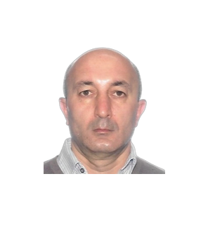
USA
Research Professor, Physics, Case Western Reserve University, Cleveland, Ohio,
Research Professor, Institute of Soft Matter, Theoretical Physics II, HHU, Düsseldorf, Professor, Department of Theoretical Physics, Institute of High Temperatures, Russian Academy of Sciences, Moscow
More than 200 scientific articles have been published in about 40 scientific journals. He works as a reviewer in about 30 scientific journals. He supervises about 10 students. He participated in about 100 scientific conferences.
Research interests:
Morphological changes of proton-conducting ionomers, conductivity of ionomers, development of water-free conductive nanocomposite ionomers.
Actuation of elastomer composites, electrostriction effects in dipole systems, development of nanocomposites with mobility in application areas.
Colloid physics, theory of effective interaction potential in electrolytes, phase transition in charged systems, liquid-crystal nucleation processes, critical electrolytes in nanopores.
Correlation effects in many-body systems, DNA-DNA condensation effects, protein-DNA interactions.
Nucleation processes and template-controlled phase transition in dusty plasma systems.
Liquid crystals on curved surfaces, defect-defect interactions, field-dependent morphologies.
New composite materials for energy storage applications, Coulomb correlation effects for induced dipoles.
Applications of artificial intelligence and deep learning in materials research.

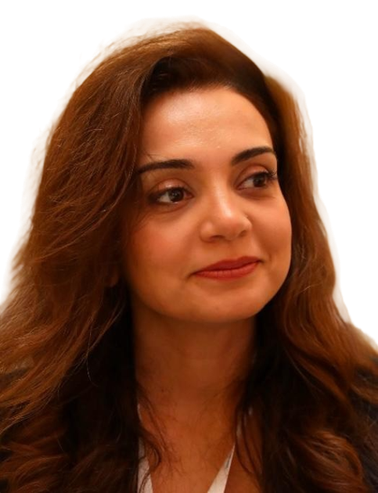
USA
Associate Dean, Professor of Educational Policy and Educational Administration, George Washington University
Sevinj Mammadova is a very experienced specialist in the field of education policy. She specializes in the development and implementation of strategies aimed at improving education systems. Sevinj Mammadova has led large-scale international projects to increase the quality and accessibility of education and ensure that every person who wants to study gets equal opportunities, resources and support, regardless of their background, socio-economic status, gender, ethnicity and other factors. Her activities are aimed at ensuring more effective functioning of education systems and strengthening their compatibility with national priorities.
Sevinj Mammadova has extensive skills in managing large-scale projects, ensuring efficient use of resources, and making important decisions that improve educational outcomes. In addition, she also performs significant activities in the field of establishing global partnerships, adapting educational programs to the needs of the country, and implementing educational reforms based on scientific research.
Sevinj Mammadova also has extensive experience in the field of financial management for educational programs. It involves key stakeholders such as teachers, students and government representatives in the decision-making process and actively participates in defining long-term educational goals.
Sevinj Mammadova holds a PhD in Educational Management and Strategies, which further strengthens her ability to lead and recommend educational reforms. It also plays an important role in shaping educational strategies and practices at the international level, contributing to better educational outcomes worldwide.
Awards:
- "International Graduate of the Month" award of the US State Department - February 2013
- University of Texas, Arlington - "University Scholar" - November 2009
- US Department of State – Edmund S. Muskie Graduate Fellowship – April 2008
- US State Department – Undergraduate UGRAD Scholarship – July 2005.


USA
Department of Pharmaceutical and Biomedical Sciences and Center for Complex Carbohydrate Research – postdoctoral fellow, University of Georgia
Claude Bernard received his master's degree from Lyon 1 University in Lyon, France. During his studies, he had a scientific internship at the Institute of Molecular and Supramolecular Chemistry and Biochemistry and Wayne State University in Michigan, USA. In 2016-2021, he received a PhD degree in "Synthesis of therapeutic nanomaterials" at the University of Quebec in Canada.
Since 2022, he has been working as a post-doctoral scientist-researcher at Georgia State University, USA.
He is the author of 10 scientific articles published in high-impact international journals. Its H-index is estimated as 4 according to the Scopus database.
His scientific activity includes the bioactive chemical synthesis of carbohydrate molecules. In particular, he published articles on the effective synthesis of di- and trisaccharides used in cancer diagnostics in "Carbohydrate Research" and "International Journal of Molecular Science" magazines. Nadir has developed a new and effective synthesis of Migalastat, a drug used for Fabry disease, and plans to apply for a patent for this methodology.

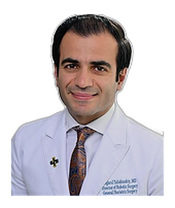
USA
St. Joseph University Director of Minimally Invasive Surgery Assistant Professor of Surgery at Seton Hall University Hackensack Meridian School of Medicine
He interned at New York Medical College's Westchester Sound Shore Medical Center and completed his residency program at New York University's Department of Surgery.
He successfully completed fellowship programs in surgical critical care at the University of Michigan Department of Surgery and minimally invasive surgery at Hackensack University Medical Center.
He is a member of prestigious medical organizations such as the American Society of Metabolic and Bariatric Surgery, the American College of Surgeons, the Society of Critical Care Medicine, and the Michigan State Medical Society.


Germany
Chair of the WAAS Executive Board
Head of the "Dynamic Systems" Department at the "Helmholtz" Scientific Research Center, Munich, Germany
Rector's Distinguished Visiting Professor at Marmara University, Istanbul, Turkey
Professor Masud Efendiyev is the first Azerbaijani scientist living abroad, known both for the prestigious international awards he won and the international conferences organized in his honor. Although he has been living and creating in Germany for more than 35 years, he remains a citizen of Azerbaijan.
Contributions to nonlinear analysis and mathematical physics
He created a new theory of topological invariants for the global solution of nonlinear equations.
These invariants play an important role in the analysis of qualitative changes (local and global bifurcation) of nonlinear systems.
Mathematical modeling
He conducted fundamental research on mathematical modeling of problems encountered in the fields of biology, medicine, ecology, mechanics and physics.
He created new classes of attractors of dynamic systems according to evolution equations and made an important contribution to their systematic study.
Activities in international scientific journals
He is a member of the editorial board of more than ten leading international magazines.
He is the editor-in-chief of "International Journal of Biomathematics and Biostatistics".
Scientific publications
He is the author of 8 books published in Japan, Germany, USA, Canada and Switzerland.
He has written more than 200 scientific articles and collaborated with co-authors from 15 countries.
Activities in international universities
In 2018, he lectured for 6 months at the University of Toronto and the Fields Institute as a "Dean's Distinguished Visiting Professor" and played an important role in the implementation of the thematic program "Emerging Challenges in Mathematical Biology".
In 2019, he was invited to the University of Waterloo with the status of "James D. Murray Distinguished Visiting Professor".
Awards and honors
- In 1991, he was the first Azerbaijani scientist to win the "Alexander von Humboldt" award established by the German government.
- In 2005, he was awarded the prestigious "Japan Society for the Promotion of Science - JSPS" award.
- In 2007, he won the prestigious "Otto Monsted" award of the Danish government. He is the first Azerbaijani scientist to win these awards.
- In 2022, he was awarded the honorary title of Honored Scientist by the President of the Republic of Azerbaijan, Ilham Aliyev.
- In 2023, he was awarded the Life Achievement Award of the Fields Institute.
International conferences and recognition
The 60th anniversary of teacher Masud was celebrated in Germany (Munich), and the 70th anniversary was celebrated in Baku (at the state level) with international scientific conferences.
75 leading scientists from 25 countries participated in the conference held in Munich.
55 famous scientists from 23 countries participated in the conference held in Baku.


Germany
Head of the Department of Rhythmology at the Mainz University Teaching Clinic, senior research doctor, leading cardiologist at the Saarland University Clinic, associate professor
He is the author of more than 10 scientific articles and his research has been published in prestigious international scientific journals. He completed his doctoral studies at the University of Cologne. He is currently studying for a master's degree in health care management at the University of Nuremberg-Erlangen. He has delivered reports at many international scientific conferences. He represented the Federal Republic of Germany and participated as a speaker in international cardiology conferences held in Azerbaijan many times. He informed his colleagues about the latest scientific research and modern cardiac operations. He works as a reviewer in "Clinical Research in Cardiology" magazine. He is an associate professor at the Teaching Clinic of Saarland University and Mainz University. He is an honorary member of the European Society of Cardiology (ESC). This honor is presented to medical professionals who have made significant scientific and clinical contributions to the field of cardiology.

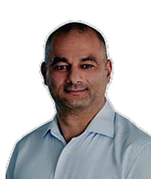
Germany
Project Manager for Smart Energy Systems, EnBW AG, Stuttgart, Germany
Since 2013, he has been working as an engineer and project manager in the field of intelligent energy systems at the German "EnBW AG" concern. He is the author of 14 scientific articles and 1 textbook published in international indexed journals. He has delivered reports at international scientific conferences in various countries. He is currently working on the optimization of wind, solar and hybrid power plants and uses computer models and artificial intelligence methods in this field.


Germany
"Stadler" company
He graduated from Strasbourg, France and Duisburg-Essen, Germany. Conducted research on "Programming of a data storage application with an in-mobile app option to change the data entry templates". He works as an IT system administrator in "Stadler" company. At the same time, he continues scientific research in the field of IT innovations.

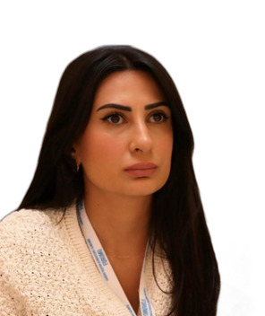
Germany
International researcher at the Institute of Medical Ethics and History of the Ruhr University Bochum, international researcher at the Hacettepe University Bioethics Center, lawyer at the law firm "Vice Versa Consulting"
The main field of research is bioethics, she is the author of more than 10 scientific and scientific-publicistic articles and methodical materials in the field of medical law, criminal law and human rights, she has translated many international conventions and other basic materials into Azerbaijani language. She participated in more than 10 local and international conferences and seminars with reports, as well as as an organizer.

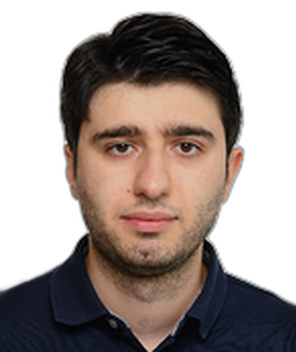
Germany
Max Planck Institute for Software Systems, postdoctoral researcher
He received his bachelor's and master's degrees in computer science from Oxford University. His doctoral dissertation was awarded the prestigious Akerman Prize in Theoretical Computer Science and the Otto Hahn Medal of the Max Planck Society. He is the author of more than 20 articles in international journals and conferences. His co-authored articles were awarded the "ACM SIGBED Best Paper Award" and the "Distinguished Paper Award" at the prestigious "Logic in Computer Science" conference.

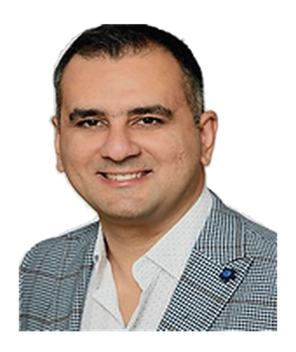
Germany
Researcher and group leader at Mannheim University of Applied Sciences, Faculty of Biotechnology, Institute of Cell and Molecular Biology and also CeMOS Research and Transfer Center
With the support of the "2007-2015 State Program for the Education of Azerbaijani Youth in Foreign Countries", he graduated with honors from the doctoral level of the Mannheim Medical Faculty of Heidelberg University. The main scientific direction is the creation of "in vitro" complex 3D cell cultures for the study of tumor diseases and the investigation of the effect of tumor cells on drugs in those cultures through various biomarkers. The contents of these scientific works have been published in two peer-reviewed articles so far. The last article was highly appreciated by the journal "Frontiers in Oncology" and republished in a special issue. In addition, the program he wrote for the segmentation of large-volume confocal microscopic images is currently in the process of being registered as an invention. As a group leader, he supervises 2 master's and 1 doctoral students.

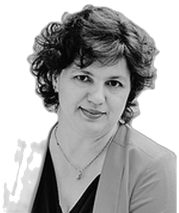
Germany
Composer, musicologist, scientific researcher, associate professor, doctor of philosophy in art studies, Baku Music Academy, Detmold Music Academy (Hochschule für Musik Detmold), and a graduate of Paderborn University, chairman of the German BRIDGE OF SOUND organization and founder, artistic director of the orchestra of the same name, founder, curator and artistic director of the HARMONY OF SOUND International Music Festival
She is the first Azerbaijani composer and musicologist to be awarded a doctoral scholarship by the prestigious "Friedrich-Ebert-Stiftung" in Germany. In addition, she is a recipient of the "DAAD" scholarship award, the scholarship award of the German Ministry of Culture of North Rhine-Westphalia, the scholarship award of the "GVL" Foundation, the scholarship awards of the "GEMA" foundation and the "Musikfonds" foundation.
In 2020, Khadija Zeynalova was awarded with the Letter of Appreciation of the Republic of Azerbaijan "for her special activity in Diaspora building".
In 2021, she was awarded the "880th anniversary of Nizamin" medal of the Republic of Azerbaijan.
In 2021 - in the Year of Nizami and Yunus Emre, she was awarded with a Certificate of Appreciation for her participation as a composer in the "Masterpieces of the Turkish World" project organized by TURKSOY.
In 2022, at the 5th Congress of the World Azerbaijanis held in Shusha, she was awarded the medal of the Republic of Azerbaijan "For Service in Diaspora Activity".
In 2024, as the first Azerbaijani composer in Germany, she was awarded the nomination "Composer and Artist of the Year" by the German Ministry of Culture and "Klosterlandschaft OWL".
Khadija Zeynalova was awarded the Honorary Decree for her contribution to the promotion of Azerbaijani musical culture in the world as a composer at the 1st Forum of Azerbaijani Culture Ambassadors held in Antalya on November 3-5, 2025.
She is the author of a doctoral dissertation on musicology and art studies, 1 scientific book published in Germany in the field of composition, 35 books published in Azerbaijan, Holland, Japan, England and Germany, and 10 articles published in scientific journals. She has given scientific reports as a composer and musicologist at 20 international scientific conferences, and is the author and artistic director of about 20 different international projects, festivals, and concerts.
She was awarded the "Progress" medal in 2026 by the Decree of the President of the Republic of Azerbaijan Mr. Ilham Aliyev for her services in the field of strengthening friendship between peoples and the development of the Azerbaijani diaspora.


Germany
"Siemens Energy" company, senior management
Yashar Musayev is an expert in the fields of renewable energy, automotive innovations, e-mobility, green hydrogen and nanotechnology. He has contributed to the development of new energy technologies by leading important research projects in industry and academia. He has more than 80 patents and more than 150 scientific articles.
Main research areas:
Green hydrogen and renewable energy: Development of electrolysis and fuel cell technologies.
Surface technologies and tribology: Coating technologies, thin film sensors and nanotechnologies.
Automotive and e-mobility: Fuel efficiency and sustainable mobility solutions.
Strategic R&D management: Strategic roadmaps, partnerships with global universities and research institutes.
Professional experience:
Siemens Energy AG (2020–present): Green hydrogen and new energy technologies, Senior Management
Schaeffler AG (2005–2020): Global research activities in nanotechnology, tribology and fuel cell technologies, leading teams of 100+ scientists and engineers, Senior Vice President
SIA Schaeffler Baltic, CEO (2016–2018): Led the acquisition and integration of Naco Technologies by Schaeffler AG.
Other positions: H-O-T GmbH, Erlangen-Nuremberg University, Daimler AG Azerbaijan partner, Azerbaijan Technical University.
Awards and recognition:
- Global Japanese car manufacturer "Supplier" award (2017).
- Materialica Design + Technology award (2016, 2014).
- One of Germany's TOP-5 innovators (2005–2020).
- Honorary diploma of the President of the Republic of Azerbaijan, 2022
Education and professional training:
Doctorate (Dr.-Ing.), Erlangen-Nürnberg University (2001).
DAAD Scholar, University of Erlangen-Nuremberg (1997–1998).
Mechanical Engineering (Dipl.-Ing.), Azerbaijan Technical University (1991).
Membership and international relations:
"Nano in Germany e.V." founding member.
"BalticNet-Plasmatech e.V." Chairman of the Board.
"Baku-Nuremberg e.V." Chairman of the Board.
Member of the Association of German Engineers (VDI).
Chairman of the Board of the Union of Engineers of European Azerbaijanis

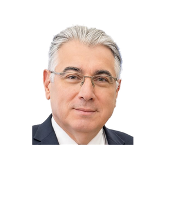
Austria
Co-Chairman of the WAAS Executive Board
He was the head of the "Application Development" section in the Department of "Safeguards" of the International Atomic Energy Agency (IAEA).
During the years 1995-2021, he participated in software development projects implemented in the "Safeguards" Department of the International Atomic Energy Agency (IAEA), worked as a project manager, group leader and section head.
- In 2006, he was awarded the "Outstanding Team Award" by IAEA.
- In 2005, by the decision of the Norwegian Peace Committee, the General Director of IAEA, Mohammed al-Baradei, and the Agency's employees were awarded the Nobel Peace Prize for their important services in the field of preventing the use of nuclear energy for military purposes and ensuring its safe use for peaceful purposes. Bakhtiyar Siracov, together with other employees of IAEA, is among those who have been awarded the Nobel Peace Prize.
- In 2023, he was awarded the "100th anniversary of Heydar Aliyev (1923-2023)" jubilee medal by order of the President of the Republic of Azerbaijan Mr. Ilham Aliyev for his services in diaspora activities.
- He was awarded the "Progress" medal in 2026 by order of the President of the Republic of Azerbaijan Mr. Ilham Aliyev for his services in the field of strengthening friendship between peoples and the development of the Azerbaijani diaspora.

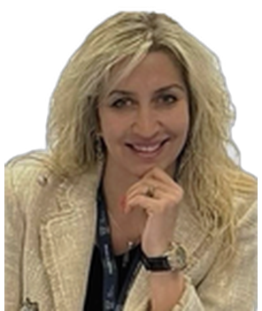
Austria
Advisor to the International Atomic Energy Agency (IAEA), official representative for Azerbaijan of the World Association "Women in Nuclear"
Dinara Abbasova is a scientist specializing in nuclear energy, nuclear safety, radioactive waste management and nuclear knowledge preservation. Her main research areas include the study of international standards for radiation chemistry, isotope and biomarker analyses, chromatography technologies, and nuclear material safety. She worked as a consultant at the International Atomic Energy Agency (IAEA), a research scientist at the Helmholtz-Zentrum Dresden-Rossendorf (HZDR) Institute for Resource Ecology, an invited professor at the Polish Academy of Sciences, and a director at the ANAS Institute of Radiation Problems. Author of more than 80 scientific articles and presentations, Abbasova has been the organizer and speaker of more than 40 international conferences, prepared e-learning materials for IAEA and the European Commission. She was awarded with "Achievements in Science" (2010), "Young Nuclear Specialist" of IAEA (2012), Simon's Fellowship (2015-2020) and OECD/NEA (information-data-knowledge management) expert award (2022). Member of "Women in Nuclear" organization, expert on nuclear safety of IAEA Expert Network and European Commission.

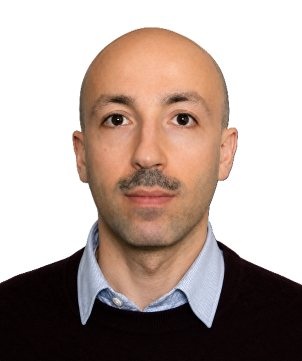
Austria
World Health Organization (WHO), expert on radiation, nuclear, chemical and biological threats, Ukraine and European region
Doctor of Philosophy in Medicine and Doctor of Medical Sciences, author of more than 100 scientific publications, articles and methodological recommendations in the field of oncology and radiotherapy.
He is an expert with extensive academic and clinical experience in radiation oncology and healthcare management. He is highly qualified in the fields of health project management, organization of cancer control programs, development of radiotherapy technologies and establishment of international collaborations.
During his tenure at the International Atomic Energy Agency (IAEA) in 2018-2023, he led four international multicentric research projects with the participation of 15-24 countries.
Main achievements:
Led more than 60 technical cooperation projects (total budget: 331 million USD);
acted as a leading expert in the UN global program to combat cervical cancer;
He led the "ELAISA" e-learning project aimed at the application of artificial intelligence technologies in radiotherapy;
ICARO3 played a leading role in organizing ESTRO training courses and GEC-ESTRO seminars.
Currently, as an employee of the World Health Organization, he provides scientific and technical support to radiation and nuclear safety programs in Ukraine.

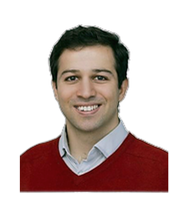
Austria
University of Vienna, Faculty of Physics, postdoctoral studies in the group "quantum optics, quantum information and nanophysics"
In 2022, he received his PhD in experimental quantum optics at the Sorbonne University in Paris. He is the co-author of 6 scientific articles published in international journals and 1 scientific patent. In 2023, he was awarded the "Marie Skłodowska-Curie Actions" scientific grant by the "Horizon Europe" program to carry out his post-doctoral research project in the field of many-body quantum optomechanics.

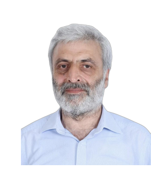
United Kingdom
MRC Laboratory of Molecular Biology, Cambridge, United Kingdom
Azerbaijan ETN Institute of Molecular Biology and Biotechnologies in Baku, group leader and laboratory manager
Research areas:
Prof. Dr. Garib Murshudov is one of the world's leading scientists in the field of molecular biology, crystallography and structural biology. His main research directions are as follows:
Macromolecular crystallography and structural biology (analysis of three-dimensional structures of proteins and nucleic acids).
Cryo-electron microscopy (Cryo-EM) and bioinformatics (molecular modeling, structural analysis and data processing).
Statistical and mathematical modeling (application of maximum likelihood and Bayes statistics methods in biological systems).
Academic and professional experience:
He works as a group leader at the MRC Molecular Biology Laboratory (Cambridge, Great Britain) and as a laboratory manager at the Institute of Molecular Biology and Biotechnology of the Ministry of Science and Education of Azerbaijan (Baku).
He worked in prestigious research institutes and universities in Great Britain, Russia and Azerbaijan.
He is the main author of the software that constructs atomic models of macromolecules using experiments, renders them transparent and checks them statistically (REFMAC, BALBES, Servalcat, AceDRG, etc.)
Awards and recognition:
- He was awarded the honorary title of "Honored Scientist" of the Republic of Azerbaijan.
- Won the Wellcome Trust Senior Fellowship - the UK's most prestigious Fellowship in biology
- Member of the European Molecular Biology Organization (EMBO).
- Fellow of the Royal Statistical Society of Great Britain.
- Member of the CCP4 executive committee – this committee brings together leading international researchers in the field of computational structural biology.
Publications and scientific contributions:
He is the author of more than 120 high-impact scientific articles, including in prestigious journals such as Nature, Science, PNAS and Acta Crystallographica.
He was a leading researcher in the development of innovative software (REFMAC5, SERVALCAT, EMDA, BALBES, AceDRG) for the analysis and modeling of molecular structures.
He regularly participates in international symposia and conferences and organizes scientific seminars in different countries (Great Britain, Japan, China, USA, Brazil, India, etc.).

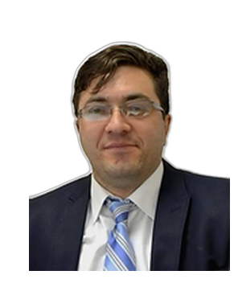
United Kingdom
Professor of Software Engineering at Queen's University, Belfast, United Kingdom
Vahid Garuslu works in two main roles as an IT specialist and an academic. He has been consulting and training international IT companies in the areas of software engineering, testing and quality assurance (QA) since 1998. At the same time, he works as a professor of Software Engineering at Queen's University in Belfast, England.
In addition, ProSys LLC in Azerbaijan and Testinium A.Ş. in Turkey. works as a Software Test Strategist and Team Leader in his companies.
Scientific achievements and recognition:
- According to the bibliometric study published in "Journal of Systems and Software" in 2018, Dr. Garuslu is rated as the 8th most active mid-career software engineering researcher worldwide (out of over 4,000 active researchers).
- He is the author of more than 150 scientific articles and has made extensive academic contributions in his field.
- In 2012-2015, he was selected as a Distinguished Speaker by the IEEE Computer Society.
- He is a member of the IEEE Computer Society and a licensed professional engineer (PEng) in Alberta, Canada.

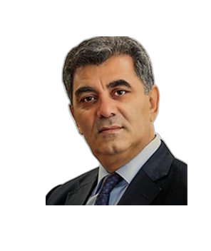
Estonia
Chairman of the Finno-Ugric and Turkic Peoples Research Center
University of Tartu - director of the Turkish Language Center, professor
Khagani Gayibli is a poet, translator, scholar and public figure. In addition to his extensive research in Azerbaijani literature, linguistics and journalism, he is also known internationally for diaspora activity and academic cooperation. With his scientific work "Comparison of Verb Structures in Estonian and Turkish Languages", he is the first Azerbaijani scholar to investigate kinship relations between Finno-Ugric and Turkic-Tatar languages in world linguistics.
Main Scientific Research and Research Areas
Turkology and linguistics:
- "Comparison of Verb Structures in Estonian and Turkish Languages"
- "Linguistic relations and structural differences between Turkish and Estonian"
Political and cultural relations:
- "Political and cultural relations between Estonia and the Turkic World"
Journalism and visual media:
- "The importance of photography in the print media"
Awards and honorary titles:
- "Progress" medal (2022) – awarded by the President of Azerbaijan for his contribution to the development of the Azerbaijani diaspora.
- "Golden Star Medal" (2024) – awarded by the International Academy of Sciences for Turkic World Studies of the Republic of Turkey.
- Medal "For service in diaspora activity" (2024) – presented by the State Committee on Work with Diaspora of the Republic of Azerbaijan.
Publications and literary activity:
Khagani Gayibli is the author of both scholarly-journalistic articles and works of poetry and prose. His works have been translated into Estonian, Georgian, Russian, Latvian, German, English and other Turkic languages.
- author of more than 40 socio-political, historical and scientific-cultural articles,
- 6 books and 1 monograph,
- author of 4 scientific articles published in 2 scientific journals.
- speaker and participant at more than 20 international symposia and conferences.
Professional and academic activity:
- Finno-Ugric and Turkic Peoples Research Center – chairman
- University of Tartu (Estonia) – director of the Turkish Language Center
- World Congress of Azerbaijanis – member of the Board, deputy chairman
- Estonian-Azerbaijani Society – chairman
- World Association of Azerbaijani Scientists – member of the Organizing Committee
- Azerbaijan Writers' Union – member
- Estonian Society of Academic Orientalists – member
- Turkish Literature Foundation – honorary member
Diplomatic and translation activity:
Khagani Gayibli has participated as a translator in high-level official meetings in Estonia and Turkey. He served as special interpreter during official visits by the presidents, parliament speakers and ministers of Azerbaijan, Turkey and Estonia.


France
Associate professor at the National Engineering Academy of Tarbes (ENIT/UTTOP) under the University of Toulouse, France; civil servant of France
In 2019, she obtained a PhD degree in Materials Chemistry from the University of Orleans, France. Her research areas include structure-property relations of polymer materials, nanostructuring, preparation of functional materials and application of these fields in modern technologies. She collaborated with numerous international laboratories and had postdoctoral studies at the French ENSAM/PIMM laboratory and the University of Delaware in the United States. Aynur Guliyeva also has industrial experience - she worked as a project manager for medicinal capsules for 2 years at Capsugel, which is part of the Lonza company. Currently, she works as an assistant professor at the university, along with teaching activities, she created a research group on "smart polymer materials" and conducts scientific research in this field. She also performs various teaching and administrative duties at the university and provides mentoring activities to support the development of female scientists. Aynur Guliyeva has a number of scientific articles and has made oral and poster presentations at international conferences.


France
Doctor of philosophy in economic sciences of Paris-Saclay University (Université Paris-Saclay), head of scientific association ALIM founded in France and organizer of scientific conferences within the association's projects
For 7 years, she worked as the head of scientific research and educational projects between the French University of Versailles (Université de Versailles – Saint-Quentin-en-Yvelines) and the US Georgetown University (Georgetown University). Currently, she works as a manager-consultant in Onepoint international consulting company. Lectures on "Project Management", "Change Management" and "Leadership" subjects are given to MBA students at Versailles University of France and ADA University of Azerbaijan.
She has delivered reports at many international scientific conferences and seminars in different countries. As an Associate Researcher, she took part in the Organizing Committee of international scientific conferences organized by the LAREQUOI scientific laboratory. She is the author of several scientific and scientific-publicistic articles. Articles about Azerbaijan were published in the French-language press. She supervises the theses of approximately 10–15 MBA and MSc students each year. Since 2019, she is the first Azerbaijani representative of the Young Ambassadors Association of France. Since 2020, she is the coordinator of the French Institute of Academic Studies for Central Asian countries. In 2020, she was awarded the medal of the Republic of Azerbaijan "For service in the Diaspora activity".


France
Research consultant at Oracle France, an international company
Reyhan Hasanova, who completed her first education as a medical biologist, later received two master's studies in molecular biology and genetics in France. After that, she earned her doctorate in medical sciences on the topic of "biomarkers research in colon cancer". She currently works as a research consultant on oncology and rare diseases in the Life Sciences department of Oracle, one of the world's largest companies in Paris. Through projects in this field, it is possible to evaluate the safety, effectiveness and cost of drugs and treatments, and to complete clinical trials by providing insights into how treatments are implemented in daily clinical practice. Projects are published in international scientific journals and presented at conferences. The company she works for cooperates with up to 200 different pharmaceutical and biotechnological companies.

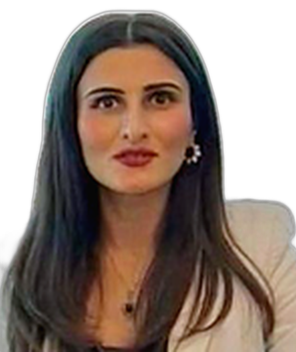
Georgia
SOCAR-Energy Georgia, business communications and public relations specialist
She is the author of 2 books and 8 scientific articles in the field of economics. She gave scientific reports at 12 international scientific conferences. Her articles have been published in local and international scientific journals.
She was a member of the Board of Directors of the International Black Sea University, and worked as an internal expert on dissertations and scientific works of doctoral students (PhD). She also supervised the scientific works of master's students at that university.
As the director of "Maarif" organization, she implements various projects related to education and educational issues of Georgian Azerbaijanis. On her initiative and organization, the 1st and 2nd Congresses of Teachers of Azerbaijani Language Schools were held in Georgia. These events were an important platform for discussing the problems of Azerbaijani-speaking schools, strengthening cooperation between teachers and improving the quality of education.
Her activity is of great importance in terms of protecting the national-cultural identity and mother tongue of Azerbaijanis living in Georgia.
In 2013, she was awarded the "Honor" medal by "Borchalı" Public Union for her achievements in science. In 2020, she was awarded the medal of the Republic of Azerbaijan by the State Committee on Diaspora Affairs of the Republic of Azerbaijan for her services to the community, as well as for her contributions to the preservation of the Azerbaijani language and culture.
She was a participant of the 5th Congress of the World Azerbaijanis, held in the city of Shusha - the Victory Congress.

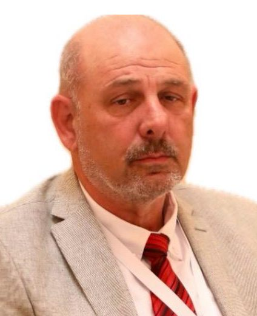
Israel
Tel Aviv University professor,
Honorary professor of Azerbaijan State Oil and Industry University
Professor Lev Eppelbaum (Tel Aviv University, Department of Geophysics) is the author of approximately 460 scientific publications. These include 12 books, 18 book chapters, 194 peer-reviewed journal articles, 81 conference materials and 171 abstracts published by international scientific publishers (Kluwer Academic Publisher, Springer, Elsevier, Chapman and Hall, Institute of Physics (Great Britain)). Prof. Eppelbaum's main research areas are geodynamics and textonic reconstructions, applied and environmental geophysics, archaeological geophysics, and integrated analysis of geophysical, geological and related data.
He was elected head of scientific departments 26 times at international conferences. Professor Lev Eppelbaum is the editor-in-chief of the journal "Geology, Geophysics, and Earth Sciences" and the editorial board of such prestigious journals as "Positioning", "Open Petroleum Engineering Journal", "Archaeological Discovery", "Stratigraphy, Petroleum, Sedimentology, Geochemistry", "ANAS Transactions, Earth Sciences", "International Journal of Earthquake Engineering", "Discover Geoscience", "Academy Green Energy", "Contributions to Geosciences", "Geosciences", "Russian Journal of Physical Chemistry", "World Journal of Physics". is a member. At the same time, he served as a guest editor in the journals "Advances in Geosciences", "Journal of Geophysics and Engineering", "Continent and Life Evolution", "Frontiers in Earth Sciences", "Geosciences (Switzerland)", "Land" and "Applied Sciences (Switzerland)".
Professor Lev Eppelbaum is a member of two international geophysical commissions: "Rotation of the Earth" commission and "WebmedCentral Ecology Advisory Board".
In 2020, he was awarded the title of honorary professor of the Azerbaijan State Oil and Industry University, and in 2023, he was elected a foreign member of the Georgian Academy of Sciences.
Professor Eppelbaum has received several awards; among them is the Christian Huygens medal of the European Geosciences Union (2019).
According to Google Scholar, his scholarly publications have been cited nearly 8,000 times.

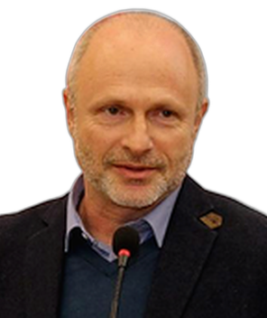
Israel
Professor of Mathematics Education and Head of the Integrative STEM Education Master's Program in the Kaye College of Academic Education
Professor Mark Applebaum is the author of 16 books and more than 90 articles published in scientific journals and conference proceedings in English, Hebrew, Russian, Spanish, Arabic, Ukrainian and Polish. His research interests include popularizing mathematics, teaching mathematics for gifted children, developing creative and critical thinking, and developing STEM education.
During his academic career, Professor M. Applebaum spoke at more than 30 international conferences, often acted as a keynote speaker and a member of scientific committees. In 2022, he was elected to the International Committee of the International Mathematical Creativity and Talent Group (IGMCG) and the Education Committee of the European Mathematical Society (EMS). Since 2023, Kaye has been serving as the head of the Master's Program in Integrative STEM Education at the College of Education.
During the last 15 years, Professor M. Applebaum has participated as an invited speaker in various academic events held in universities and schools of Azerbaijan. These institutions include Baku State University (BSU), Baku branch of Moscow State University (MSU), Azerbaijan Language University, Azerbaijan State University of Architecture and Construction, school number 134 and other educational institutions.


Sweden
Member of the WAAS Executive Board, press secretary
Boras University, associate professor, university lecturer, course leader
She worked in these positions until 2021 at the Universities of Gothenburg, Stockholm and Umea. She is a scientific worker-researcher of the joint SONOMA scientific center of these universities
In 1999, she defended her dissertation at the Institute of Mathematics and Mechanics of ANAS in Baku in order to obtain the degree of candidate of sciences. In 2000, she approved her dissertation in Sweden and started working as a postdoctoral fellow at Umea University. She is the author and co-author of 20 articles in this field in 10 scientific journals. In 2006, she defended her new dissertation at Gothenburg University. She is also a specialist in didactics of mathematics. 12 articles have been published in this field. She defended her dissertation on language and philology, and has a master's degree. She is a specialist in Russian-English-Swedish languages and sociologically oriented philology. She has about 100 articles in this field. She has delivered reports at 50 international scientific conferences. Scientific supervision of 1 doctoral, 20 master's and 60 master's works on mathematics didactics, 5 PhD theses were defended.
Since 2000, she has been a member of the Board of Directors of the Azerbaijan Federation (AFI), which operates in Sweden. She is the head of the organization "Gobustan-Azerbaijan Aydınlar Ocağı".
In 2022, for her contribution to the promotion of the Azerbaijani language and culture in foreign countries, she was awarded the medal of the Republic of Azerbaijan "For service in Diaspora activity" by the State Committee for Work with Diaspora.


Italy
Postdoctoral researcher, Department of Biomedical Sciences, University of Padova
In 2023, she received a PhD in structural bioinformatics from the University of Montpellier, France. She is the author of six scientific articles. Marie Skłodowska-Curie served as the representative for Europe on the management board of the Research and Innovative Exchange grant. Her main research area focuses on the use of artificial intelligence and machine learning methods to study protein structures and functions in the context of neurodegenerative diseases.


Canada
University of Waterloo (University of Waterloo), director of mathematics, business and accounting programs
He is the author of 24 scientific articles and 3 textbooks in the field of probability theory and mathematical statistics. He acted as a reviewer (referee) for three scientific journals and one book.
In addition to various scientific seminars at St. Petersburg University, the Institute of Mathematics and Mechanics of the Azerbaijan National Academy of Sciences, and the Azerbaijan State University of Economics, he participated as a speaker in 18 international seminars and conferences.
He was the scientific supervisor of two doctoral students and four master's students, and also worked in examination commissions.
In 2017, he was awarded the University of Waterloo's Outstanding Performance Award.
In 2016, he was awarded the "Progress" medal by the President of the Republic of Azerbaijan for his contribution to the development of the Azerbaijani diaspora.

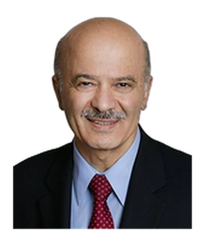
Canada
Senior Fellow, Massey College, University of Toronto
Canadian Radiation Safety Institute, Chair of the Board of Directors
Sir Neville Mott (Nobel laureate) was awarded a fellowship by the Institute of Physics in Great Britain in 1986 for his research on the experimental verification of the theory of non-crystalline semiconductors. In 1992, receiving a scholarship from the British Institute of Engineering and Technology, he conducted research in the field of experimental verification of the memory switching mechanism in non-crystalline semiconductor devices.
He has authored or co-authored 27 peer-reviewed scientific articles, 18 conference abstracts, 81 technical reports and papers, 13 radiation safety training manuals, and 18 additional articles.
He has given speeches at more than 50 international conferences and presented research results to the scientific community.


Canada
Faculty Member and Instructor in Applied Environmental Technologies, University of Calgary Environmental Management Program, Bay River College, Calgary, Alberta, Canada
The research results were presented in 18 scientific articles published in well-known scientific journals (for example, Journal of Biological Chemistry (JBC), Biochemistry) and a number of conference materials. She has received several individual awards for her research, including a Max Planck Society Doctoral Fellowship (2003–2004), an Alberta Innovates Health Solutions Fellowship (2008–2010), and a Merck-Frosst Industrial Research Award (2008). Over the past 11 years, she has trained more than 1,000 pupils and students.

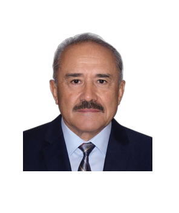
Canada
Seasonal Associate Professor (Long Service Teaching Appointment), Department of Mathematics and Statistics, Faculty of Science, York University, Canada
He is an expert in operations research and mathematical modeling. In 1981, he defended his PhD thesis on Applied Mathematics at the Computing Center of the Academy of Sciences of the former USSR (Moscow). In 1991, he was awarded the diploma of Senior Researcher in the field of Application of Computing Techniques, Mathematical Modeling and Mathematical Methods in Research. From 1999 to 2024, he taught more than 25 different PhD, master's and bachelor's courses at York and Toronto Universities in Canada. More than 25 articles have been published in various international scientific journals. He is the author of a textbook and a book. He gave reports at 12 international scientific conferences held in USA, Canada, Australia, Italy, China and Russia. He gave speeches at the scientific seminars of the Institute of Cybernetics of the Azerbaijan National Academy of Sciences, Fields Institute of Mathematical Research of Canada, Toronto and York Universities and ADA University. In 2008, he worked in the Analysis Committee of the International Conference on Computational Intelligence in Modeling, Control and Automation held in Vienna (Austria). He was a member of the program committees of INFOCOMP 2013 (Lisbon, Portugal) and INFOCOMP 2015 (Brussels, Belgium) international conferences. Referenced in two high school textbooks. In 2013, he was awarded the Excellence in Teaching Award by the Faculty of Science at the University of York – an award given to him for teaching excellence and service to the faculty. Together with Professor Robert G. Burns, he translated the works of N. N. Moiseyev, a former academician of the Academy of Sciences of the USSR, "Man and the Noosphere" and "How Far Tomorrow is" into English. The translation of the last book was published by Birkhauser publishing house in 2022.

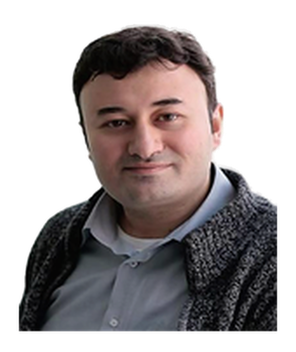
South Korea
Hankook University professor of regional studies
Rovshan Ibrahimov worked as a professor in the field of international relations and energy policy at various universities in Azerbaijan, Turkey, Germany, Poland, Kazakhstan and South Korea, and currently works as a professor at Hankuk University of Foreign Languages (HUFS) and Khazar University.
He was awarded for his activities in the field of foreign policy analysis, international relations and diaspora at the Center for Strategic Studies under the President of the Republic of Azerbaijan.
Professor R. Ibrahimov has received scholarships and scientific awards from prestigious institutions such as Oxford University, Soros Foundation, Sasakawa Foundation and Cold War Research Program. He is the author of more than 200 scientific articles in the field of energy security, foreign policy and international relations.
In 2024, the book "Foreign Policy of Small States: South Caucasus States in the Modern World and Beyond" was published. His articles have been published in international publishing and research institutes such as "Springer Nature Switzerland", "Routledge" and "Caspian Report".
He regularly makes speeches at scientific conferences and summits on international energy and geopolitics topics. Prof. Dr. Rovshan Ibrahimov is one of the leading experts in the field of energy diplomacy and foreign policy of Azerbaijan, has extensive academic experience and a rich scientific research portfolio. It is distinguished by its active participation in international strategic discussions.
At the same time, he worked as the head of the Department of International Relations, vice-rector for International Relations and head of the department at Qafqaz University.
The scientist is a member of the editorial board of international scientific journals and makes scientific contributions to various think tanks. In 2024, he was awarded the medal of the Republic of Azerbaijan "For services in diaspora activities" for his activities in the field of international relations and diaspora.


Mexico
Institute of Mathematics of the National Autonomous University of Mexico, doctor of physical and mathematical sciences, Emeritus National researcher of Mexico, member of the Mexican Academy of Sciences
Author and co-author of 131 scientific articles published in the world's leading journals in the field of mathematical physics and 62 scientific reports at international conferences held in 15 countries of Europe, North and South America. These scientific works have been cited in 2825 publications of scientists engaged in the study of similar problems (Google Scholar h-index is 28). He was the scientific supervisor of 4 graduate students who defended their dissertations in Azerbaijan and one doctoral student in Mexico.


Egypt
Co-Chairman of the WAAS Executive Board
A teacher of Azerbaijani language and literature at the Faculty of Literature of Cairo University, a scientific leader at the department of Oriental languages and Arabic, president of the Egypt-Azerbaijan Peoples' Friendship Academy, adviser on foreign relations of the General Secretariat of the World Fatwa Organizations, chairman of the Board of the Egypt-Azerbaijan Friendship Society, head of the Azerbaijani Diaspora in Egypt.
Since the 2016-2017 academic year, he has been working as a teacher of the Azerbaijani language at the Faculty of Literature of Cairo University, Egypt, and as a scientific supervisor at the department of Oriental Languages and Arabic Language of the faculty. By 2026, he taught the Azerbaijani language to more than 1,700 Egyptians.
Public and professional activities:
- Founder and president of the Egypt-Azerbaijan Peoples' Friendship Academy
- Adviser on foreign relations of the General Secretariat of the World Fatwa Institutions
- Chairman of the Board of the Egypt-Azerbaijan Friendship Society
- Head of the Azerbaijani Diaspora in Egypt
- Executive Director of Halga Foundation
- Coordinator of Egypt-Azerbaijan inter-parliamentary friendship group.
- Since 2003, he has led 1000s of students from more than 100 countries who came to study in Egypt, and through them he is promoting the truths of Azerbaijan in the world. Currently (in 2025), he is leading more than 2,000 students from 65 countries studying in Egypt.
Scientific and research activities:
For more than 25 years, he has been conducting research on Azerbaijan in Arabic sources. As a result of these studies, he wrote two books in Arabic about more than 250 Azerbaijani scientists.
The work "Azerbaijani scientists and writers in Arabic sources" was published in the Azerbaijani language in 2022.
He discovered manuscripts of hundreds of Azerbaijani scientists in Egyptian libraries and studied them.
More than 15 scientific and journalistic articles were published in Arabic and Azerbaijani languages in prestigious magazines of Arab countries and Azerbaijan.
International activity:
He participated in more than 20 international conferences held in different countries of the world and made speeches on scientific and cultural topics related to Azerbaijan.
Awards:
- In 2017, by order of the President of the Republic of Azerbaijan, Mr. Ilham Aliyev, he was awarded the "Progress" medal for his services in the field of strengthening friendship between peoples and the development of the Azerbaijani diaspora;
- On July 18, 2018, he was awarded the medal of the Egyptian Ministry of Education for his exceptional services in the development of cultural and scientific relations between Egypt and Azerbaijan;
- In 2019, he was awarded by the Embassy of Uzbekistan in Egypt for his support to the Uzbek Diaspora living in Egypt;
- In 2019, he was awarded by the Trade Union of Seyids in Egypt for his exceptional services in the development of relations between Egypt and Azerbaijan;
- In 2020, he was awarded the medal "For service in diaspora activity" for his great contributions to the diaspora policy of our country;
- In 2024, he was awarded an honorary award by the Union of Arab Countries Students studying at al-Azhar University;
- In 2024, by order of the President of the Republic of Azerbaijan, Mr. Ilham Aliyev, he was awarded the "100th anniversary of Heydar Aliyev" (1923-2023) jubilee medal for his services in implementing the idea of Azerbaijanism and strengthening the solidarity of Azerbaijanis of the world.
- On September 3, 2025, he was awarded the first class "Science and Sciences" order by the President of Egypt, Abdel Fattah Al-Sisi. Seymur Nasirov is the first person to be awarded this order among foreigners living in Egypt.
- On October 1, 2025, he was awarded the medal of the Ministry of Education of Egypt for his services in the development of scientific and cultural relations between the Arab Republic of Egypt and the Republic of Azerbaijan and was awarded with a letter of appreciation by the Egyptian Cultural Center in Baku.
- On December 16, 2025, he was honored by Mufti of Egypt and Chairman of the General Secretariat of the World Fatwa Houses and Institutions Prof. Nazir Muhammad Eyyad for his great contributions to religious and intellectual work, as well as for his efforts in promoting the values of tolerance, moderation and intercultural dialogue, with the participation of muftis and great scholars from 50 countries of the world.
- On March 17, 2026, he was awarded the "Seal of the Prophet" order in Egypt for his effective work in the field of service to science and knowledge, promotion of the values of tolerance, and important contributions to the strengthening of friendly relations between nations.


Oman
Founder and director of the Royal Conservatory in Muscat (Oman).
She is the author of seven journal articles, two methodical works and one educational book. She held five seminars at Oman Royal Opera House and one seminar at Sultan Qaboos University. She is the developer of more than 20 programs, as well as the author and artistic director of about 20 different projects, competitions and concerts.
She has spoken at the embassies of Japan, Turkey, France and Russia on many occasions and has been awarded letters of thanks and certificates for her activities. She took part in the implementation of the following two large-scale concert programs:
• May 31, 2024 – a concert program organized for an audience of about 250 people called "Cradle of Eastern Culture" held in Shusha.
• May 30, 2025 – a concert program dedicated to Oman–Azerbaijan friendship and organized for an audience of about 300 people.
Articles about Dr. Saida Khalilova's creativity and work have been published many times in influential media outlets in Oman.


Poland
Head of doctoral program at Vistula University, professor of the Department of Economics and Finance, and also professor of the Department of Economics at Korea University.
He is the author of 2 textbooks, 3 book chapters, 1 research grant and more than 100 scientific articles in the field of economics. More than 70 of these articles have been published in prestigious journals indexed in "Web of Science" and "Scopus" databases.
In addition, he gave reports at more than 30 international scientific conferences, and also participated in the translation of 4 textbooks from English to Azerbaijani.
In 2023, 2024 and 2025, Shehriyar Mukhtarov was included in the "Top 2%" list of the world's most influential scientists prepared by Stanford University. He is also the editor-in-chief of "Journal of Sustainable Development Issues".

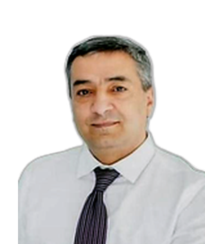
Kazakhstan
Member of the Scientific Advisory Council under the Constitutional Court of the Republic of Kazakhstan, Professor of the Department of International Law and Law of Turan University, Doctor of Law; Head of the project program of the Fund for the Development of Parliamentarianism
Professor Akif Suleymanov is a well-known lawyer and scientist in the field of constitutional law and public administration. He has the degrees of Doctor of Philosophy in Law (PhD) and Doctor of Legal Sciences. His scientific researches are mainly devoted to theoretical and practical aspects of interaction between the President of Kazakhstan and the Constitutional Council and public control over executive authorities.
Professor Suleymanov, who has more than twenty years of academic experience, worked in pedagogical and administrative positions in a number of prestigious higher education institutions of Kazakhstan - Academy of Economics and Law, National Pedagogical University named after Abay, Narkhoz University and Turan University, where he currently works.
He is the author or co-author of 2 textbooks and 8 textbooks on public administration, constitutionalism, public control, human and civil rights. More than 100 scientific articles have been published as a result of his research on constitutional law, public control, gender policy and the political system of Kazakhstan. 6 of these articles are published in prestigious international scientific journals and "Scopus" index databases. Also, his scientific writings were published in journals approved by the Higher Attestation Commissions of Kazakhstan and CIS countries, as well as in prestigious scientific publications of near and far foreign countries.
In addition to his scientific activities, Professor Suleymanov, who actively participates in the field of public administration, is a member of the expert and advisory councils of the People's Assembly of Kazakhstan, the Constitutional Court and the Fund for the Development of Parliamentarianism.
For his scientific achievements and public services, he was awarded the Birlik gold medal, as well as honorary decrees of the Ministry of Justice and Education of the Republic of Kazakhstan. In addition, he works as a member of the editorial boards of a number of scientific journals in the field of law in Kazakhstan, Azerbaijan and Kyrgyzstan.


Kazakhstan
Candidate of Pedagogical Sciences, professor of the Department of Languages and Literature of the Central Asia Innovation University
Professor Arzu Gurbanova gave lectures on "English language stylistics", "English grammar", "History of England", "Practical phonetics of the English language" and other subjects. She is the author of the textbooks "English Grammar", "English Phonetics", "English Stylistics" and the monograph "Pedagogical conditions for increasing the independent work of high school students in the English language class".
She is the author of more than 250 scientific articles in local and foreign publications, including journals indexed in the "Scopus" database. She has delivered reports at international scientific conferences and seminars held in various countries. She was the scientific supervisor of more than 100 master's dissertations on English language teaching methodology, participated as an opponent in the defense of 2 candidate's dissertations.
In 2020, she was awarded with a letter of thanks by the State Committee for Diaspora Work of the Republic of Azerbaijan for her special activity in the work of diaspora building.
She translated the famous Azerbaijani writer Kamal Abdulla's "Valley of Sorcerers" from Azerbaijani to Kazakh (2012). Also, she translated the book "Hajimukan - The Mighty One", published on the occasion of the 150th anniversary of the famous wrestler Hajimukan Minaytpasov, from Kazakh into Russian and English (2021).
Within the scope of her scientific and pedagogical activities, she supervised the dissertation work of more than 150 graduate students.
Awards:
- "Excellence in Education" medal, 2013
- 20th anniversary medal of the People's Assembly of Kazakhstan, 2015
- "Birlik" gold medal ("Birlik"), 2018
- "Kind Mother" gold medal, Dede Gorgud Foundation of the Republic of Azerbaijan, 2019
- 25th anniversary medal of the People's Assembly of Kazakhstan, 2020
- "Meirim" badge of the People's Assembly of Kazakhstan ("Мейирим"), 2020
- For her activities in the field of international relations and diaspora, she was awarded the medal of the Republic of Azerbaijan "For services in diaspora activities" in 2024
- 30th anniversary medal of the People's Assembly of Kazakhstan, 2025

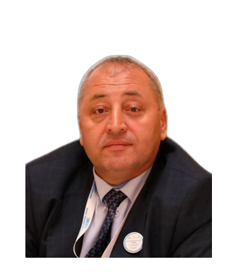
Kazakhstan
Head of the Department of Management and Marketing, South Kazakhstan University named after M. Auezov
He is the author of 5 monographs, 7 articles published in rated scientific journals and 15 articles published in journals recommended by the Ministry of Science and Higher Education of the Republic of Kazakhstan.
He is the author of more than 70 articles presented with speeches at international scientific and practical conferences, as well as the scientific supervisor of 15 master's students.
He is the author of two intellectual property certificates issued by the Ministry of Justice of the Republic of Kazakhstan No. 36257 dated 22.05.2023 and No. 36258 dated 26.05.2023.
In addition, he won 3 scientific projects and is the author and participant of more than 70 executive acts in educational and production processes.


Kyrgyzstan
Honored doctor of the Kyrgyz Republic, doctor of philosophy in medicine, chairman of the Friendship and Cooperation Society "Kyrgyzstan-Azerbaijan"
Akif Alaferdov is a well-known traumatologist, a descendant of Azerbaijanis who were deported to Kyrgyzstan in 1933.
Dr. Akif made important contributions to the methodology of surgical treatment of femoral neck fractures. McMurray received a patent for the invention of the "detachable fixator" used in surgery. Akif Alaferdov is the author of a monograph, more than 35 scientific articles, 3 methodical materials and more than 20 effective recommendations on the treatment of femoral neck fractures with surgical intervention.
During his professional career, Alaferdov was the head of the complex trauma department at the National Hospital of the Ministry of Health of the Kyrgyz Republic and a member of the Special Scientific Council of the Kyrgyz State Medical Institute. He has performed thousands of operations and trained highly qualified specialists. His services in this field were evaluated by the President of the Kyrgyz Republic with an Honorary Order in 1997, and in 2003 he was awarded the title of "Honored Doctor".
In addition to his achievements in the field of medicine, Alaferdov was also engaged in social and cultural activities. During the years 1997-2013, he was the chairman of the "Azeri" Public Union of Azerbaijanis living in Kyrgyzstan. Under his leadership, Sunday schools in the Azerbaijani language were opened, mosques were built, and a folklore ensemble called "Stars" was created. He took part in many events to strengthen the relations between Azerbaijan and Kyrgyzstan, organized "Bishkek-Baku" telebridges for many years with the participation of deputies, writers, public figures and diaspora representatives representing both sides.
For his long-term public activity, Akif Alaferdov was awarded the "Dank" state award in 2008, as well as the medal "For service in Diaspora activity" from the State Committee for Work with the Diaspora of the Republic of Azerbaijan. In 2023, he was awarded the Order of "Friend" by the President of Kyrgyzstan for his contributions to strengthening peace, friendship and cooperation between nations. He was awarded the "Chingiz Aytmatov" medal for his achievements in the fields of culture, science, literature and social activities.
He was awarded the "Progress" medal in 2026 by order of the President of the Republic of Azerbaijan Mr. Ilham Aliyev for his services in the field of strengthening friendship between peoples and the development of the Azerbaijani diaspora.


Russia
Head of the Department of Communication and Sociology of Lomonosov Moscow State University, member of the Union of Russian Writers
Professor Mammadov is the author of 42 books, 128 scientific articles and more than 250 social and journalistic articles in the field of sociology. He participated as a speaker in more than 60 international and local scientific conferences, authored or co-authored 54 monographs and textbooks. Under his scientific leadership, 25 candidates of sciences and 3 doctors of sciences were trained.
He was awarded the Russian President's Culture Award and the "Education-Online Grant" award of the V. Potanin Foundation for his scientific and pedagogical activities. The Hirsch index, reflecting the influence of his scientific activity, is 49. At the same time, Professor A. Mammadov's creativity is not limited only to the scientific field. He is the author of a number of cartoons, plays and screenplays. His articles were published in many prestigious international scientific journals and he actively participated in joint scientific projects with various countries.

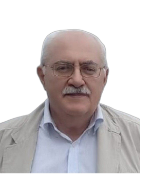
Russia
Writer and poet, member of the Russian Writers' Union, honorary member of the Azerbaijani Writers' Union, head of the Coordination Council of the World Writers' Organization
He is a graduate of St. Petersburg Mining University. He worked in such prestigious companies as TNK-BP and ROSNEFT. He is the author of about 100 books published in Azerbaijani, English, Spanish, Italian, Chinese, Russian and Serbian languages. He is an honorary member of the Azerbaijan Writers' Union (2021), a member of the Russian Writers' Union (2000), a member of the Russian National Geographic Society (2016), a member of PEN International, a traveler and researcher of the Arctic and Siberia.
He is the co-chairman of the Literary Council of the Assembly of Eurasian and African Peoples, the head of the Coordination Council of the World Writers' Organization and the chairman of the Toponymic Commission of the Krasnoyarsk branch of the Russian National Geographic Society. He was awarded the "For Peace" (Russia), "Za-Za Verlag" (Germany), Vincenzo Padula (Italy), Naji Naaman (Lebanon) awards, as well as three silver medals of the World Writers' Organization, including the "For Contribution to the Development of World Literature" medal.

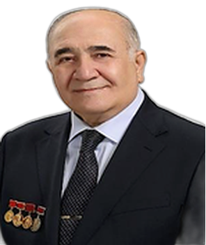
Russia
Former USSR Ministry of Electronic Industry, Scientific Research Institute "Fonon" - head of department, Moscow State Academy of Business Administration - professor, head of department, dean, vice-rector, first vice-rector, "MIET" National Research University - professor, head of the Quality of Education Process, deputy vice-rector
He is a graduate of the Faculty of Mechanics and Mathematics of the Moscow State University named after M. V. Lomonosov and his postgraduate studies.
He is a well-known Soviet, Russian and Azerbaijani scientist in the field of development of mathematical models and methods for the study of wave and oscillation processes in the creation of piezoelectric devices and apparatus used in the world ocean and outer space research, marine seismic exploration, electronics, defense and medical industries.
For the first time, he managed to solve the problem of determining the optimal shape of piezoelectric elements, which has not been solved for many years, meets the physical properties required in the dynamic mode, and has a minimum mass or volume. The solution to this problem made it possible to determine the location and individual characteristics of objects moving under water in the world ocean, the information of interest to experts in relevant scientific fields was recorded from space objects - artificial satellites and spaceships, and the creation of receiver-transmitter devices to transmit and receive the Flight Control Center. For the first time, he successfully applied the method of solving two- and three-dimensional dynamic problems, which are important in the creation of piezoelectric devices used in military equipment. The existence of the "edge effect" in disk-shaped piezoceramic membranes was also theoretically discovered by him for the first time. The piezoceramic actuator, developed jointly with the co-authors, was successfully used to solve the problem of creating an artificial heart. He is the author of more than 450 open and closed (confidential) scientific works, inventions, monographs, higher education textbooks, a number of scientific articles on the problems of organizing higher professional education and educational technologies. Under his scientific guidance, 7 graduate students, including 3 Azerbaijanis, defended their candidate dissertations. In general, based on the obtained scientific results, he delivered more than 60, including 12 commissioned plenary scientific reports, at 30 international and general congresses, congresses, conferences and symposia.
Some of the prizes and awards received by Professor Aladdin Allahverdiyev for his achievements in the fields of science, technology and education:
Medal named after the Hero of Socialist Labor of the Russian Cosmonautics Federation, lieutenant general, Lenin Prize laureate, professor, chairman of the State Commission on Space Programs Georgy Alexandrovich Tyulin;
Medal named after Khalil Ahmadovich Rakhmatulin, Hero of Socialist Labor of the National Committee for Theoretical and Applied Mechanics of the Russian Academy of Sciences, academician, laureate of four Orders of Lenin, several State Prizes;
the title "Honored worker of higher vocational education of the Russian Federation";
Three times - in 1975, 1977 and 1980 - badges of "The winner of the race of socialism" established by the Central Committee of the Communist Party of the Soviet Union, the former Council of Ministers of the USSR, the Central Committee of Trade Unions, the Central Committee of the All-Union Labor Party;
"850th anniversary of Moscow" state medal;
Jubilee medal "250th anniversary of MSU named after M.V. Lomonosov";
Gold medal of the All-Russian Exhibition Center;
diploma of the winner of the review-competition of the Presidium of the Central Office of the All-Union Scientific Medical-Technical Society;
4 years in a row (2001-2004) laureate name and cash prizes of the "Moscow Grant" competition established by the Moscow Government for science and technology in the field of education;
Numerous honorary decrees, diplomas, certificates, etc. of the Russian Federation, some foreign countries, many international institutions, organizations.

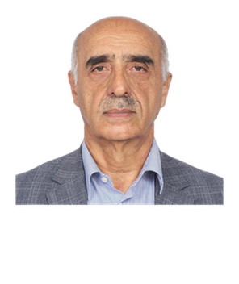
Russia
Professor of the Department of Anesthesiology and Reanimatology of the First Moscow State Medical University named after I.M. Sechenov, doctor of medical sciences, professor, senior transfusionist doctor
He graduated from Azerbaijan State Medical Institute in 1976. In 1980, he received the doctor of philosophy degree in medicine, in 1988 he received the scientific degree of doctor of medical sciences, and since 1993 he has been a professor.
He is the author of more than 390 scientific works in the field of transfusiology, including 18 monographs and 13 lessons and methodical materials. He is the author of 4 inventions, has prepared 15 PhDs and 6 PhDs. He was awarded "Man of the Year" (2000), "Best scientific monograph" (2001) and "Academic B.V. Petrovsky medal" (2009) for his scientific activities and services.
He is a member of the editorial board of Russian and international scientific journals, a participant and organizer of a number of prestigious international conferences. Actively participates in scientific societies of Russia and Azerbaijan in the field of transfusiology.

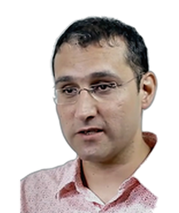
Russia
Head of the Department of Theoretical Physics named after L. D. Landau, Moscow Physico-Technical Institute
He is the author of 6 scientific books and a textbook in the field of theoretical physics and mathematics. About 80 scientific articles have been published in prestigious international journals. He has delivered nearly 100 reports at prestigious international conferences held in Europe, America, India, Korea and Japan.
He was the scientific supervisor of 6 PhD students.
He was repeatedly awarded grants and awards by the Ministry of Science and Education of Russia, the Presidential Foundation and international scientific institutions, worked as an invited professor in Germany and Japan, and was awarded medals for his active services in science and education.

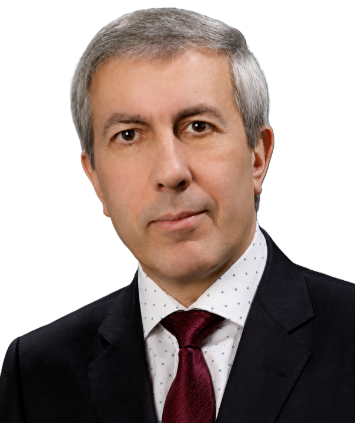
Russia
Head of department at St. Petersburg State University of Economics (2020-2023) Professor at St. Petersburg State University of Economics "Economics and Management of Enterprises and Industrial Complexes"
More than 150 scientific works of Professor Ismayil Aliyev have been published. These works include monographs, textbooks, teaching aids, as well as articles published in local and international scientific journals. Among his main publications, the textbook "Economics of Labor" (5th edition), the textbook "Management of Human Resources" (4th edition, certified) and the textbook "Income and wage policy" have a special place among his main publications.
His scientific activity covers priority directions such as labor economics, state social policy strategy, population's standard of living and quality, formation of socio-economic policy, labor and wage management, state regulation of the economy, as well as human resources management.
Professor Aliyev also made significant contributions in the field of scientific-pedagogical personnel training. Under his leadership, 10 candidates of sciences and 2 doctors of sciences defended their dissertations.
In 2002-2019, he worked as the deputy head of the "Labor Economics" department of St. Petersburg State University of Economics, and in 2020-2023, he was the head of the department of the same university. Since 2023, he continues to work as a professor of the "Economy and Management of Enterprises and Industrial Complexes" department.
In 2022, he was appointed the chairman of the Dissertation Council on Regional and Field Economics (Labor Economics) and since that year he is the head of the "Labor Economics" scientific school of the university.
His contributions to the development of education and his long-term effective activity were also highly appreciated at the state level. He was awarded the Order of Honor of the Ministry of Education and Science of the Russian Federation by order No. 333/k dated May 4, 2018, as well as the Order of Honor of the Legislative Assembly of St. Petersburg for his personal contribution to the development of higher education in St. Petersburg.

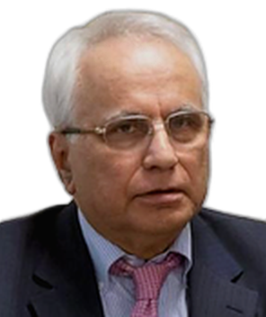
Russia
Honored Scientist of the Republic of Azerbaijan, foreign member of the Russian Academy of Architecture and Construction Sciences (RAACS), member of the Azerbaijan and Russia Journalists Unions
He is the author of more than 300 scientific articles and textbooks in various fields of science and technology, including development and operation of oil and gas fields, drilling hydraulics, non-Newtonian mechanics, and pipeline systems.
Doctors of sciences, candidates, engineers and specialists trained by K. E. Rustamov work today not only in Azerbaijan, but also outside the country.
As a publicist, he brings truths about Azerbaijan's history, culture, traditions and state policy to Russian-speaking audiences.
The Dzen platform where he publishes is a global article-sharing and content recommendation service owned by Yandex Services AG in Switzerland and is used in approximately 50 languages.


Russia
Candidate of Economic Sciences, Associate Professor, Head of the Department of Advertising and Public Relations, Deputy Dean of the International Journalism Faculty of the Moscow State Institute of International Relations of the Ministry of Foreign Affairs of the Russian Federation
She is an expert on Turkish economy. She is the author of the monograph "Features of modernization of the Turkish economy at the turn of the 20th-21st centuries" and the co-author of the textbook "Turkey's Economy".
In addition, she is the co-author of the monographs "Industrial Policy" and "World Economy and International Business: Theories, Trends and Challenges" (indexed by Scopus).


Russia
Professor of the Russian Presidential Academy (RANEPA), Honored Educationist of Russia, full member of the Russian Academy of Natural Sciences, Russian Academy of Ecology and the International Academy of Communicology, official expert of UNESCO
He is the author of more than 400 publications, including monographs and textbooks printed in Azerbaijani, English, Spanish and Russian languages. The textbook "Ecology" prepared by him for grades 10-11 has been published since 1996 and is widely distributed in the CIS countries. Under his scientific guidance, 40 candidate and doctoral theses were successfully defended.


Russia
Doctor of medical sciences, academician of the Russian Academy of Natural Sciences (TEA), Honored scientist and educator, professor and senior researcher of the Russian National Research Medical University named after N.I. Pirogov
She is a full member of the European Society of Plastic and Reconstructive Ophthalmological Surgeons (ESOPRS), an honorary member and coordinator of the Society of Ophthalmologists of Turkic-speaking Countries. At the same time, she is a member of the Expert Council of the American Society of Ophthalmologists, the International Dacryological Society, the International Society of Pediatric Ophthalmologists, the Russian Society of Ophthalmology, the Russian Society of Plastic, Reconstructive and Aesthetic Surgeons, the International Union of Scientists, Teachers and Specialists, as well as the Internet publication "Modern Problems of Science and Education".
In 2005, she successfully defended her doctoral dissertation at the Institute of Eye Microsurgery of the Scientific and Technical Complex named after S.N. Fyodorov in Moscow.
She is the author of 18 invention patents, 15 efficiency proposals and more than 140 scientific articles and theses. She was awarded gold medals named after Hippocrates and V. I. Vernadsky for her scientific and pedagogical activities.

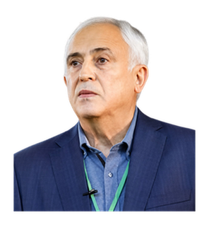
Russia
Doctor of biological sciences, corresponding member of the Russian Academy of Sciences (REA), REA's K.A. Head of the "Controlled Photobiosynthesis" laboratory of the Timiryazev Institute of Plant Physiology (Moscow), senior researcher of the Institute of Fundamental Problems of Biology of REA (Pushchino), professor of M.V. Lomonosov Moscow State University and Moscow Institute of Physics and Technology, and head of the "Photosynthesis and Hydrogen Energy" laboratory of Bahçeşehir University in Turkey
He is the author of 12 scientific books in the field of biophysics, biochemistry and molecular biology - 4 of them were published in Russian and 8 in English. More than 450 articles have been published in international scientific journals, and 48 book chapters have been published in scientific collections published in Russia and abroad.
According to Google Scholar, more than 35,000 citations have been made to his scientific works, and the H-index is 91.
During the last 30 years, he gave reports at 75 international scientific conferences, was the author of 7 inventions, and was the scientific supervisor of 11 PhDs and 2 doctors of sciences.
He was awarded the honorary title of Honored Scientist of the Russian Federation for his scientific achievements, and is also a laureate of the International Global Energy Award.


Russia
Russian University of Technology (MIREA), professor of the Department of Higher Mathematics and Programming
He is the author of more than 250 scientific and educational works, including a number of scientific and technical reports and 6 authorship certificates. He supervised the scientific works of master's students, PhD students and dissertation students, 5 of them successfully defended their candidate's dissertations.
He gave reports at all-Russian and international scientific conferences held in Germany, Yugoslavia, Hungary, Greece, Azerbaijan, Turkey and the USA.
He is a member of international scientific societies - GAMM and EUROMECH. He was repeatedly invited to various German universities to give lectures on selected fields of applied mathematics and mechanics and to conduct joint scientific research.

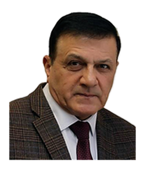
Russia
Deputy Director for Innovation and Implementation of the Federal Scientific Agrotechnical Center VIM (FGBNU), professor of Moscow Polytechnic University and N.E. Bauman Moscow State Technical University, doctor of technical sciences, professor, corresponding member of the Russian Academy of Sciences
He has more than 150 scientific works, monographs and inventions. He is the author of a number of textbooks in the fields of mechanical engineering, applied mathematics and informatics. In recent years, he has been leading scientific projects on the creation of "Intelligent machine technologies" and the application of nanotechnology in the field of mechanical engineering. In 2019, he was elected a corresponding member of the Russian Academy of Sciences.
In 2000, Z. Gojayev received a letter of thanks from the President of the Russian Federation, and was repeatedly awarded with honorary decrees of the former USSR Ministry of Agricultural Vehicles. In 2011, he was awarded the "Honored Machine Builder of Russia" badge.


Saudi Arabia
Consultant surgeon, head of Orthopedic Department at King Fahad and Sabya hospitals in Saudi Arabia
Doctor of medical sciences, traumatologist-orthopedic surgeon, inventor professor Azer Jafar oglu Abdullayev is a medical scientist with rich scientific and practical experience in the field of traumatology and orthopedics. He has worked as a teacher, assistant and associate professor at Azerbaijan Medical University for many years, and since 2004 he has been the head of the Orthopedic Department and consultant surgeon at King Fahad and Sabya Hospitals located in Gizan, Saudi Arabia.
Abdullayev, who was born in 1955 in Sharur, Nakhchivan Autonomous Republic, entered the Faculty of Medicine and Prevention of Azerbaijan Medical University in 1972, and in 1979 he completed the surgery internship. In 1989, he was awarded the degree of doctor of philosophy in medicine, and in 2012, he was awarded the degree of doctor of medical sciences.
A scientist's scientific activity is accompanied by high inventiveness. He is the author of 6 inventions - external fixation device, compression pin and healing ointment, etc. - widely used in medical practice, known by such names as "Abdullayev apparatus", "Abdullayev stick" and "Abdullayev ointment". These inventions have been used in the treatment of thousands of patients and have given positive results.
Professor Abdullayev's scientific-pedagogical activity is also rich: he is the author of more than 70 scientific articles, 2 teaching-methodical materials, and the owner of 6 invention patents. His activity made significant contributions to the development of practical health care, along with important scientific innovations in the field of traumatology and orthopedics.


Saudi Arabia
Islamic Development Bank Group, Head of Corporate Strategy and Research Department
Elvin Efendi is an economist with rich international experience in the field of economy and development. Currently, he works as the head of strategy and research in the Strategic department of the Islamic Private Sector Development Corporation (ICD), a part of the Islamic Development Bank Group. In this role, he leads the development of corporate and country strategies, the management of economic research and policy documents, the publication of leading reports, and the development of private sector development initiatives in member countries.
Before that, Elvin Efendi worked in important positions in the field of economic analysis and policy planning in institutions such as the Central Bank of Azerbaijan, the World Bank and the Ministry of Economic Development of the Republic of Azerbaijan. He studied at the University of London, Michigan State University and Baku State University, and received a PhD in economics.
Within the framework of his scientific activity, Elvin Efendi is the author of more than 20 peer-reviewed scientific articles in academic journals, as well as more than 25 research documents (working papers). He gave reports at more than 10 international scientific conferences and participated in events held in more than 15 countries. For the first time, he developed the "Private Sector Development Index of Islamic Countries", which evaluates the level of development of the private sector in Islamic countries, and this academic innovation was published in a prestigious scientific journal. He has taught more than 300 graduate and undergraduate students in economic development, macroeconomics, microeconomics, and econometrics at various universities, including Dar Al Hekma University. He also taught at Khazar University and UNEC.
Elvin Efendi has deep research experience in economic policy, development economics, entrepreneurship and social capital. He was a member of the editorial board of a number of prestigious academic journals, performed extensive scientific and organizational activities as a leader and participant of various international projects, and was awarded various prizes and scholarships.

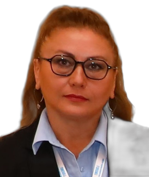
Türkiye
Kars city, Qafqaz University, Faculty of Science and Literature
Lecturer in the Department of Contemporary Turkish Dialects and Literature
Her scientific work focuses on modern Azerbaijani literature, dialectology, Ashiq literature and Azerbaijani folklore. She teaches Azerbaijani literature, the history of Azerbaijani literary criticism and the history of the Azerbaijani literary language. Under her supervision, 10 master's dissertations on Azerbaijani literature were defended in Kars, Turkey.
She has presented at more than 30 international scientific conferences; most of these papers were published in scholarly volumes. Her articles have appeared in more than 10 international books and more than 30 international journals. She has edited 10 scholarly books and authored 4 books on Azerbaijani language and literature. Her work has also been published in prestigious journals indexed in "Web of Science" and "Scopus".
Her doctoral dissertation, "Ahmed Javad and Turkey", received wide attention in Azerbaijan and Turkey. Her book "Motherland in Azerbaijani Romantic Literature" is the first scholarly study on this topic published in Turkey. The dialectological dictionary "Oral Dictionary from Georgia to Azerbaijan (Borchali, Gazakh, Aghstafa, Tovuz, Gadabey, Shamkir, Ganja)", prepared with Vasif Sadygli, was widely discussed in periodicals and academic journals in Azerbaijan, Turkey, Georgia, Russia and elsewhere and received high praise.


Türkiye
Van Yüzüncü Yıl University, Professor of the Faculty of History and International Relations
For the first time in Azerbaijan, he conducted research on the management system of the Ottoman state. He conducted extensive research on Karabakh in Ottoman sources and conducted research in Turkish archives for a long time in this field. He is a member of Atatürk Research Center and Turkish Historical Institution. He is a well-known specialist in the field of Ottoman-Russian relations.


Türkiye
Head of the Department of Sociology at Üsküdar University, expert of the International Turkish Academy, vice-president of the Turkish World Sociologists Union, member of the board of the International Philosophical Research Center (UFAD)
He is the author of more than 150 scientific works, including 5 monographs, dedicated to issues of migration, family, youth and national identity in Azerbaijan, Turkey, USA, Russia, England, Germany, Sweden, Italy, Kazakhstan and other foreign countries. 12 articles were published in "Web of Science" and "Scopus" indexed journals.
He gave more than 100 reports at scientific conferences and symposia held in foreign countries.
Scientific metric indicators in the Google Scholar database: h-index: 11, i10-index: 14.
The sociologist regularly broadcasts interviews and scientific-sociological analyzes related to the field of scientific research and the realities of Azerbaijan in the Turkish media.


Türkiye
Professor of the Department of Oral and Maxillofacial Surgery, Faculty of Dentistry, Istanbul Aydın University
Associate Professor Elchin Badalov was admitted to the Faculty of Dentistry of Azerbaijan Medical University in 2002. According to the cooperation agreement signed between Azerbaijan Medical University and Istanbul University in 2003, he successfully passed the selection exam for excellent students and continued his education as a special talented student at the Faculty of Dentistry of Istanbul University within the framework of the state program.
In 2007, he graduated with honors from the Faculty of Dentistry of Istanbul University and began his doctoral studies at the Department of Oral Implantology of the same university. In 2014, he defended his thesis on "Effects of Vascular Endothelial Growth Factor on Bone Tissue Growth in an Experimental Mouse Model" and received a Doctor of Philosophy (PhD) degree in medical sciences.
Since 2014, he has been working as a scientific-pedagogist at the Department of Oral, Dental and Maxillofacial Surgery of the Faculty of Dentistry of Istanbul Aydın University. In 2023, he was awarded the scientific degree of associate professor.
Under the guidance of Associate Professor E. Badalov, 7 dissertation topics for doctoral studies were prepared and scientific guidance activities in this direction are currently ongoing. He is the author of more than 30 articles and 3 books published in international indexed scientific journals. At the same time, two surgical methods bearing his surname were applied to medical practice.
Within the framework of his scientific activity, he has delivered reports at more than 100 international scientific conferences held in different countries, and has organized professional development courses and trainings related to surgical methods and clinical experience.
For more than 10 years, he has been working as a member of the scientific committees (Opinion Leader) of four international dental implant brands from America, Germany, Turkey and Israel, and has been conducting theoretical and practical training programs for doctors.
Associate Professor Elchin Badalov is one of the limited number of leading scientists specializing in the field of dental implantology and operating in Turkey. He is considered one of the outstanding scientists among Azerbaijani specialists working in this field.


Türkiye
Chairman of the Association of Azerbaijani Scientists (Turkey),
Honorary professor of Bilkend University, leading researcher of Nanotechnology Scientific Research Center
Professor Amirulla Mammadov (known as Emirullah M. Mehmetov in scientific publications) is an internationally recognized scientist in the fields of optics, nonlinear optics, laser physics, metamaterials, topological insulators, photonics, nanophotonics and bio-medical modeling. He received a doctor of philosophy (PhD) degree in physics and mathematics at the "Ioffe" Institute of Physics and Mathematics of the former USSR Academy of Sciences, and then a doctor of sciences (habilitas doctor) degree, and in 1988 he was awarded the title of professor of "Optics".
He continued his research activities in the world's leading science and technology centers - Stanford, Caltech, Wisconsin and Rome "La Sapienza" universities, US military laboratories, as well as in Japan and various European countries. Currently, he works as a professor-researcher at the Nanotechnology Research Center (NANOTAM) of Bilkent University.
Professor Mammadov is the author of more than 350 prestigious international scientific articles and an invited speaker at more than 50 international conferences. He also worked as a scientific consultant at ASELSAN and the Ministry of Defense of Turkey.
For his outstanding scientific and social activities, he was awarded the State Prizes of the former USSR and the Republic of Azerbaijan, the honorary title of Honored Scientist of the Republic of Azerbaijan, the Order of "Friendship", the medal "For service in Diaspora activity" and the 100th anniversary medal of Baku State University. At the same time, he is a member of the Board of Trustees of the Turkey-Azerbaijan Friendship, Cooperation and Solidarity Charitable Society and the chairman of the Association of Azerbaijani Scientists (ABID) operating in Turkey. His multifaceted scientific activity made important contributions to the development of scientific cooperation in the region and the world.


Türkiye
Kars city, Head of the Foreign Relations Office of the Caucasus University, Member of the University Board, Head of the Caucasus and Central Asia Research Center, Head of the Department of Inorganic Chemistry
Professor Hajali Najafoglu received his higher education in chemistry at Azerbaijan State University, and then received his doctorate in inorganic chemistry at the Azerbaijan National Academy of Sciences. Since the 1990s, he has worked academically as an associate professor and professor at various universities in Turkey, especially at Qafqaz University.
His scientific creativity is extremely rich: in the field of chemistry, more than 200 articles have been published in prestigious journals indexed in "Web of Science" and "Scopus" scientific databases. In addition, he is the author of 3 books and 26 articles in humanitarian fields, and the editor of 7 books. He also gave a speech at 104 international scientific conferences, and in 1988 he was registered as the author of inventions No. 1471352 and 1471353.
Professor Najafoglu has been the scientific supervisor of 11 PhD students and 19 graduate students. His main research areas are the synthesis of metal complexes and the study of their crystallographic, thermal and biological properties. In particular, his fundamental research on nicotinamide and various metal carboxylate complexes made significant contributions to the development of chemistry. He gained a high reputation in the scientific community with his work in the field of analysis of crystal structures, thermal analysis and synthesis of bioactive substances. His multifaceted scientific and pedagogical activity played an important role in the development of regional and international cooperation in the field of chemistry. Scientific metrics in Google Scholar: h-index: 25, i10-index: 82. WOS h-index: 19.


Türkiye
Head of the Department of Contemporary Turkish Dialects and Literatures (Azerbaijani Turkish and Literature) at Qafqaz University of the Republic of Turkey
The Department of Contemporary Turkish Dialects and Literature operating at Qafqaz University is the only 4-year department in Turkey that trains specialists in Azerbaijani language and literature. Since 2014, on the initiative of Ilkin Gulusoy, a master's department has been opened in the department, and during this period, about 60 masters have graduated.
In 2023, he organized 5 international scientific conferences on the occasion of the 100th anniversary of the birth of our national leader Heydar Aliyev, 2 international scientific conferences dedicated to the author of Karabakh Victory, Supreme Commander-in-Chief Ilham Aliyev, and 3 international conferences in 2024 within the framework of the 100th anniversary of the Nakhchivan Autonomous Republic. Conference materials were published by the Ministry of Culture and Tourism of the Republic of Turkey with ISBN.
Ilkin Gulusoy is the author of 12 scientific books. 27 articles were published in periodical scientific publications included in international summarizing and indexing systems. He has delivered reports at more than 70 international scientific conferences and is the scientific editor of more than 60 books. Under his guidance, 10 people defended their master's thesis on the specialty of Azerbaijani language and literature.
He was awarded 3 times for his contributions to the science of Turkology. The book "Comparative Phraseology of Turkish Turkish and Azerbaijani Turkish" prepared jointly by Sema Sahin Dede was highly appreciated as the first research work written in this field.

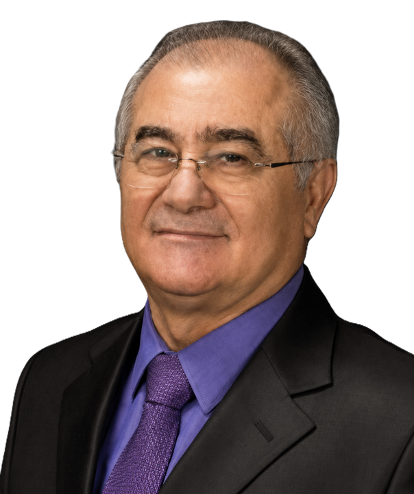
Türkiye
Professor of Izmir University of Economics, founding dean and dean of the Faculty of Sciences (2001–2022), head of the Department of Mathematics (2001–2014)
Professor Ismixhan Bayramoglu specializes in probability theory, statistics and stochastic processes. His research interests include mathematics, probability and statistics, and reliability engineering. In particular, his research in the areas of probability and statistics, reliability theory, ordinal random variables, copula theory, and dependence modeling has made important contributions to the development of new concepts and theoretical approaches in these fields. In 1988, he received a Ph.D. degree from Kyiv State University, and during his scientific career, he worked in a number of prestigious scientific and academic institutions in Azerbaijan and Turkey.
Since 2001, he has been working as a professor and dean at Izmir University of Economics. Before that, he worked as a professor at Ankara University and as a research worker at the Azerbaijan National Aerospace Agency. Teaching activities include Statistics and Mathematics at undergraduate and graduate levels. Professor Bayramov has prepared more than 17 PhDs, many of them are currently pursuing their academic careers in various international universities. He has published more than 120 scientific articles in international journals with a high impact factor, 75 of which have been included in SCI and SCI Expanded indexed journals. At the same time, he is the author of three international books in the field of probability and statistics. A member of the editorial board of several international magazines, the scientist also serves as the editor-in-chief of the "Statistics" magazine.
His scientific activity is detailed in prestigious scientific platforms such as "Web of Science", "ORCID" and "Google Scholar", he participated as an invited speaker in numerous international conferences, which is an indicator of his international reputation in his field.


Türkiye
Head of the Department of Russian Language and Literature of Anadolu University
Professor Maqbula Sabziyeva is an expert in the field of Russian language and literature and currently works as the head of the Russian Language and Literature department at the Faculty of Literature of Anadolu University. She received a bachelor's and master's degree at Moscow State University, and a doctoral degree at Baku State University. She defended her doctoral dissertation on the translation of Leo Tolstoy's novel "War and Peace" into Azerbaijani.
In her scientific activity, she focused on gender issues, intertextuality, translation theory, folklore, children's literature, methodology, and Russian-Turkish literary relations. She is the author of three scientific books and a number of collective works in these fields. 14 scientific articles have been published in scientific periodicals and international indexed journals, and she has given speeches at more than 50 international scientific conferences.
At the same time, Professor Maqbula Sabziyeva, who is the author or editor of more than 20 scientific books, monographs and translations, is also known in the field of translation and research of the works of classics such as Tolstoy, Aitmatov. She has translated more than 20 books published in Turkey and Russia within the framework of the "Promotion of Turkish Literature" program implemented at the state level in Turkey.
Professor Maqbula Sabziyeva was also a member of a number of international juries and editorial boards, worked as an editor in prestigious scientific journals. She was twice awarded the international prize for her scientific and cultural contributions to the Turkic world. Her scientific and pedagogical activity played the role of a bridge between Turkish and Russian literatures and made a significant contribution to the development of important scientific and cultural relations in this field.

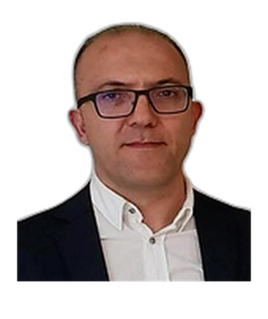
Türkiye
Docent of Marmara University
Dr. who is the author of five books in the field of literature and history. Mehdi Ganjali also acted as a chapter author in five other books published in these fields. He is one of the co-authors of the "Azerbaijan" Newspaper project implemented at the initiative of ADA University. Within the framework of his scientific activity, eight articles were published in five prestigious scientific journals, and he gave reports at eight international scientific conferences. At the same time, he worked as a scientific supervisor of 11 graduate students. His academic interests include topics such as Azerbaijani and Turkish literature, press history, the Karabakh issue, Azerbaijan-Turkey literary relations, and the legacy of intellectuals. In addition to being the author of two monographs, numerous scientific articles and book chapters, he actively participated in various scientific symposia and conferences. He worked in academic and administrative positions such as "Mevlana Exchange Program" and institute management, and also signed important projects as a translator and editor. New Turkish literature, national identity and the ideology of Turkishness, the history of the development of the Azerbaijani press and philosophical issues about the Turkic world constitute his main research areas. M. Ganjali, who is fluent in Russian, is currently continuing his scientific activities in Istanbul.

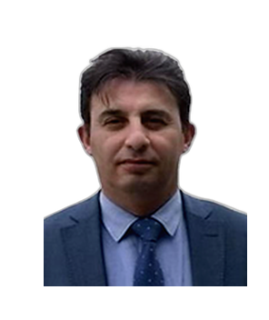
Türkiye
Teacher of Ankara University's Department of Contemporary Turkish Dialects and Literatures
He translated a one-volume book on historical topics, and supervised the compilation of two-volume scientific and two-volume literary books. He was the scientific editor of two scientific-research books and published 18 scientific articles. He acted as the chairman of the organizing committee of 11 scientific symposia, participated as a speaker in 8 international scientific conferences. He was a member of the scientific council of one international scientific journal, the chairman of the organizing committee of two international symposia, and the editor-in-chief of one scientific journal. For many years, he worked as an editor and editor-in-chief in "Varlıg" magazine, and currently he is the owner and editor-in-chief of this publication. He worked as a speaker and translator at TRT, and taught at Tehran and Ankara universities.
Currently, he is a lecturer at Ankara University and the head of Tabriz Research Institute (TEBAREN). Professor Mehmet Rıza Hayet, who works scientifically in the field of modern Turkish dialects and literature, has played a leading role in the organization of more than 10 international symposia and conferences. His scientific interests include Turkish press, Iranian Turks, language policy, national identity issues and South Azerbaijan topics. He is the author or editor of more than 100 scientific articles, 5 books and numerous translated works in these directions. Mirza Mehdi Khan Astarabadi's works, Atatürk's "Speech" and Dr. The collection of articles by Javad Hayat occupies an important place. He is represented in the editorial board of a number of prestigious academic journals.
His scientific and practical activities are mainly focused on Turkology, language and culture of South Azerbaijani Turks, identity issues and language rights of Iranian Turks.


Türkiye
Bolu Abant Izzet Baysal University Faculty of Medicine, Department of Pharmacology, educational coordinator
Oruj Allahverdiyev graduated from Istanbul University Jarrahpaşa Faculty of Medicine in the field of Medical Pharmacology. He is the co-author of 4 scientific books and 1 textbook, more than 100 scientific works in the field of medicine and pharmacy. He participated in many scientific symposia, as well as in Turkey and other countries.
After high school, Oruj Allahverdiyev was admitted to the Faculty of Pharmacy of Azerbaijan Medical University. Having succeeded in the Turkish government's educational exam, he was sent to Turkey to continue his studies at Istanbul University. After graduating from Istanbul University Faculty of Pharmacy in 2006, he began his master's studies at the Department of Pharmacology and Clinical Pharmacology, Faculty of Medicine of Istanbul University, and graduated in 2009. During his master's degree, he conducted many scientific studies on brain diseases, and these studies were published in world-renowned international journals. During his studies, several scientific researches were awarded by TUBITAK.
Later, he began his doctoral studies at the Department of Medical Pharmacology of the Czarrahpaşa Medical Faculty of Istanbul University. In 2014, he completed his doctoral studies as an "Honor Student" and received the scientific degree of Doctor of Philosophy in Medical Sciences. During his doctoral studies, he conducted a number of scientific studies on brain diseases such as substance addiction, epilepsy, depression, Parkinson's and multiple sclerosis. These studies have been presented at world-renowned international symposia, congresses and conferences and published in prestigious journals.
Oruj Allahverdiyev graduated from the Faculty of Management of Medical Institutions of Istanbul University in 2017 and was awarded the title of associate professor in the field of Medical Pharmacology by the Higher Education Council of Turkey (YÖK). He trained more than 10 graduate students under his scientific guidance. Currently, he is the co-author of more than 100 scientific works, 1 textbook and 4 scientific books, as well as a number of scientific articles. More than 30 of his scientific works have been published in "Science Citation Index" journals. Currently, associate professor Dr. O. Allahverdiyev continues his scientific activities in Turkey.


Türkiye
Erciyes University (Kayseri) Faculty of Literature, Head of the Department of Armenian Language and Culture
After graduating from the journalism faculty of Baku State University, he worked as a journalist and editor in the Azerbaijani press for many years. He worked in responsible positions in "Millat", "Yeni Azerbaijan", "Respublika", "Azerbaijani Ordusu" and other influential press organizations, starting from "Communist" newspaper, and also headed the press service at BSU and taught as a teacher. In 2007, he defended his thesis on "Armenian issue" and received the degree of Doctor of Philosophy in Political Sciences. Since 2010, he has been working as a professor in the department of Armenian language and culture at Erciyes University in Kayseri, Turkey.
Prof. Gafar Mehdiyev is also the head of the Armenian Studies Center of Azerbaijan and the League of Independent Investigative Journalists. He is the author of more than 20 books and more than 100 scientific articles on the Armenian issue, Armenian ideology, Karabakh conflict and Armenian fascism. His works have been published in Azerbaijan, Turkey and a number of foreign countries. The textbook "Armenian Lessons" is taught in Turkish universities. In 2005, he was awarded the "Progress" medal by the President of the Republic of Azerbaijan. He knows Turkish, Armenian, Russian and German languages.

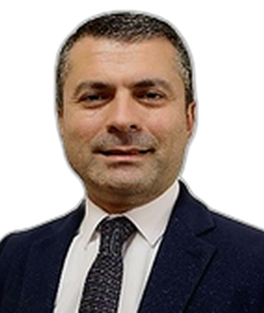
Türkiye
Hasan Kalyoncu University, cafe director
As one of the first professors in his field in Turkey, he was the author of 3 scientific books in the fields of Educational Psychology and Positive Psychology, 35 scientific articles in international indexed journals, and speaker at 40 international scientific conferences. Also, he supervised 6 PhD (doctorate) and 19 master's students. He worked as a researcher in 7 international projects developed in the field of innovative approaches in education and application of positive psychology in schools. He received various prizes and awards for his scientific activities and contributions to the field of education. He is a member of prestigious organizations such as the American Psychological Association and the Turkish Psychological Counseling and Guidance Association. The projects led by him have produced significant results, especially in the field of psychological well-being of young people and motivation in education. He also actively participated in many university and state projects in Turkey, including cooperation with TUBITAK and UNICEF. His academic activities include educational psychology, family therapy, social support systems, and psychological resilience during a pandemic.

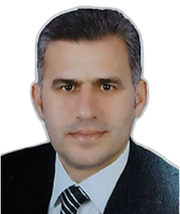
Türkiye
Kilis 7 Aralik University, Kilisli Muallim Rıfat Dean of the Faculty of Education
He is the first professor of Azerbaijan in the field of Theology and History of Islamic Sects. He is the author of 6 scientific books, 10 scientific book chapters and many scientific articles on the History of Islamic Sects. He has also delivered reports at many international scientific conferences.
He is the author of the idea and one of the organizers of The International Symposium On 'Practice of Coexistence in Islamic Culture'. The first symposium was held in Azerbaijan (2022), the second in Turkey (2023), and the third in Indonesia (2024). He is also the organizer and participant of a number of international conferences. His scientific activity was not only academic, but also had an important impact in the fields of religious teaching and education, he taught at various universities and gave speeches at international conferences.
In addition, he translated a number of religious and scientific texts from Persian and Arabic, and worked as a scientific editor and critic. Professor Sh.Ahmadoglu also supervised master's theses and continues his pedagogical activities in the fields of Islamic culture and the history of sects.


Türkiye
University of Economics and Technology of the Union of Chambers and Exchanges of Turkey (TOBB).
Author of more than 1,500 scientific articles in the field of High Energy Physics and Accelerator Technologies, speaker at more than 100 international scientific conferences, supervised more than 20 PhD students.
Professor Saleh Sultansoy currently works at TOBB University of Economics and Technology located in Ankara. He specializes in high energy physics, particle accelerators, history of science and science policy. In 1969-1974, he studied at Azerbaijan State University, and in 1985, he received a doctorate degree at the Institute of High Energy Physics in Serpukhov, Russia. During his career, he worked in prestigious institutions such as Azerbaijan National Academy of Sciences, Ankara University, DESY (Germany), Gazi University and TOBB ETÜ.
His works have been cited more than 81,000 times in Web of Science, more than 275,000 times in Google Scholar, and more than 235,000 times by HEP Inspire. H-index is 127, 208 and 215 respectively.
His main research areas are high energy physics, accelerator technologies and scientific strategies. In 2013, he was awarded the "Engin Arık" science prize of the Turkish Physics Society, and in 2016, he was awarded the "Golden Apple" science prize of the Turkish world.
Saleh Sultansoy was a member of scientific councils at CERN and other international research centers, and actively participated in the development of scientific policy in Turkey and the Turkic world. He is one of the founders and leaders of the Turkish Accelerator Complex (TAC) project, a long-term national scientific research initiative, the author of the ATAM (Ankara Fundamental Research Center) initiative, a participant in ATLAS, CLIC, LHeC, FCC and other CERN projects. He was also the scientific leader of a number of advanced projects on accelerator technologies conducted within the framework of DPT-TAEK and TUBITAK.

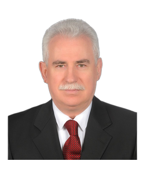
Türkiye
Member of the WAAS Executive Board, Honored Artist of the Republic of Azerbaijan, Yeditepe University of the Republic of Turkey, Faculty of Fine Arts, teacher of plastic arts-painting department
Honored artist of the Republic of Azerbaijan, Prof. Dr. In 2008, Teymur Rzayev was the author and head of the "Desen Anfisi" (black pencil drawing workshop) project at the Faculty of Fine Arts of Yeditepe University of the Republic of Turkey. The workshop, as the first and only example in this field in Turkey, has become a prestigious art space where students study with great interest and pleasure.
Prof. during his academic activities. Dr. Rzayev trained numerous students: dozens of undergraduate students, 18 master's and 7 doctoral students graduated. At the same time, articles were published in 8 local and 5 international scientific journals, and 3 books-albums were published. So far, he has participated in 43 local and 18 international exhibitions, 26 local and 12 international symposia, and his works of art are displayed in the permanent collections of 3 local and 8 international museums.
Official scientific and honorary titles, awards, positions received:
He has been a member of the Union of Artists of Azerbaijan since 1991.
In 2014, the Inter-University Council of the Republic of Turkey gave him the academic title and position of docent.
In 2009, he was awarded the scientific degree of Doctor of Philosophy in art studies by the Higher Attestation Commission under the President of the Republic of Azerbaijan.
In 2011, he was awarded the honorary title of Honored Artist of the Republic of Azerbaijan.
In 2013, he was awarded the "Shuvalov" medal of the Russian Academy of Arts.
In 2015, he was awarded the gold medal of the Russian Academy of Arts "For service to the Academy".
In 2016, he was awarded the Order of the Republic of Azerbaijan "For Service to the Motherland, III degree".
In 2017, he was elected Honorary Academician of the Russian Academy of Arts.
In 2020, he was given the academic title and authority of "professor" by the Board of Directors of Yeditepe University of the Republic of Turkey.
In 2022, he was awarded a special medal for his services to the Azerbaijani Diaspora.
In 2022, he was elected a member of the Coordinating Council of Azerbaijanis Living Abroad under the chairmanship of the President of the Republic of Azerbaijan Mr. Ilham Aliyev.
In 2024, he was elected a member of the Board of the World Union of Azerbaijani Scientists.


Türkiye
Member of the WAAS Executive Board,
Kahramanmaraş Sütçü Imam University, Head of the Department of Political Science and International Relations
Academic career and scientific activity
Prof. Dr. Togrul Ismayil worked as a teacher and researcher in various universities:
2003-2010 - worked as a teacher at the Department of International Relations of Baku Slavic University.
May 3, 2004 - founded the Turkish Studies Center at Baku Slavic University and headed that center for a long time.
Currently, he works as a professor in the Department of Political Sciences and International Relations of the Faculty of Economics and Management at Kahramanmaraş Sütçü Imam University (KSU) in Turkey. His academic research mainly covers international relations, Turkey-Azerbaijan relations, South Caucasus and Central Asian politics, Russia-Turkey relations and other geopolitical issues.
Scientific works and conferences
Prof. Dr. Togrul Ismayil gave speeches at various international and local scientific conferences and published many articles and books. He has conducted research on the political problems of the Caucasus and Central Asia, security issues, international relations and diplomacy.
Impact on media and society
He often speaks in international and local media organizations and conducts political analyzes as an expert. He is especially known for his views on Azerbaijan-Turkey relations, the Karabakh conflict, Russia-Turkey relations and geopolitical changes in the region.
Awards and honors
He was awarded by the state of Azerbaijan for his contributions to the development of scientific and cultural relations between Azerbaijan and Turkey.
He has been awarded with various awards and certificates for his achievements in the field of academic activities and international relations.


Türkiye
Hacettepe University, Koç University
He is the author of 75 scientific articles, 1 book and 2 textbooks published in various scientific journals in the field of mathematics, received more than 2000 references according to "Google Scholar". 17 candidate (PhD) theses were defended under his scientific guidance. He is a member of the editorial board of 6 international and 3 Azerbaijani journals in the field of mathematics and applied mathematics. V. A. Steklov Institute of Mathematics (Russia), University of Tennessee (USA), Faza Gursey Institute (Turkey), Autonomous University of Barcelona (Spain), Silk Road Mathematics Center (China) and other scientific centers conducted researches and gave a series of lectures. He has been a speaker at more than 50 international scientific conferences.


Türkiye
Ege University Institute of Turkish World Studies
Head of the department of social, economic and political relations
She participated in scientific conferences and symposiums in Turkey and other countries. She worked in scientific positions as a docent and professor. She has been awarded various prizes in Turkey. She was the editor of 86 scientific publications. Articles have been published in international publications. She worked in various responsible positions at Ege and Dokuz Eylül universities.


Ukraine
Member of the Academic Council at the Kyiv University of Intellectual Property and Law of the National University "Odessa Law Academy", professor of the Department of Constitution, International Law and Public-Legal Sciences, Doctor of Law, Professor, Diplomat, Honored Education Worker of Ukraine, Academician of the Higher Education Ministry of Ukraine, Head of the public organizations "Council of Scientists of Azerbaijanis of Ukraine" and "Institute of People's Diplomacy"
In 2005, at the Academy of Public Administration under the President of Ukraine, he defended his candidate's thesis on "Features of the Presidential Institute in Ukraine and the Republic of Azerbaijan: the aspect of public administration" and received the degree of Candidate of Public Administration and Legal Sciences.
In 2012, at the Institute of Law of the Verkhovna Rada of Ukraine, he defended his doctoral dissertation on "Comparative-legal analysis of the role of the Presidential Institute in the fight against international terrorism (based on the example of the Republic of Ukraine and Azerbaijan)" and received the degree of Doctor of Legal Sciences. He is the author of 8 monographs, 3 textbooks, 2 teaching aids, more than 250 scientific and journalistic articles, he has given speeches at more than 35 international scientific conferences, and 3 Scopus articles have been published. He supervised 25 candidates of legal sciences and 2 doctors. Currently, there are 7 candidate of sciences graduate students in Ukraine. He is the head of public organizations "Council of Scientists of Ukrainian Azerbaijanis" and "Institute of People's Diplomacy", which unites about 70 scientists of our compatriot. He is an academician of the National Academy of Sciences of Higher Education of Ukraine. In 2013, he was awarded the honorary title of "Honored Education Worker of Ukraine", and in 2016, he was awarded the "Progress" medal of Azerbaijan. He has a diplomatic rank.

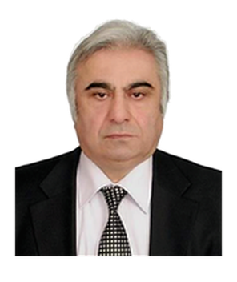
Ukraine
Vice-Rector for Scientific and Pedagogical Affairs of Kharkiv Polytechnic Institute of the National Technical University of Ukraine (NTU "KPI")
He is the chairman of the organizing committee of the international scientific conference "Mathematical Methods in Electromagnetic Theory" (MMET). In 1997, he was declared the man of the year by the American Biographical Institute, and in 1999 he was elected a senior member of the IEEE (Radio Engineers) International Institute (USA). From 2008 to 2012, he worked as the director of the Basic Chemical Research and Project Institute (NIOCHIM, Kharkiv). He is the head of the Distance Education Center at Kharkiv Polytechnic Institute, National Technical University of Ukraine (NTU KPI). Since 2016, he is the vice-rector for scientific and pedagogical affairs of that institute. He is the author and co-author of more than 150 original scientific articles in leading national and international journals. He is the co-author of 3 books published in Japan and Europe. It trained 7 candidates of sciences and one doctor of sciences. Since 2000, he has been an academician of the Academy of Applied Radio Electronics (Kharkov, Ukraine).
In 2011, he was awarded the honorary title of "Honored Scientist" of the Republic of Azerbaijan.


Ukraine
Vice-rector for international cooperation, Kharkiv National University of Radioelectronics, Academician of the Ukrainian Academy of Applied Radioelectronic Sciences
He is the co-author of more than 150 scientific works (17 of them are indexed in Scopus), 3 monographs and 11 textbooks. He has 12 copyright certificates and invention patents of Ukraine. He supervised the writing and defense of candidate dissertations of 5 graduate students. He works as vice-rector for international cooperation at Kharkiv National Radioelectronics University of Ukraine. He holds the scientific degrees of candidate of technical sciences (research and improvement of fiber-optic information transmission systems), doctor of technical sciences (development of the theory of designing electrodynamic devices with distributed and quasi-distributed nonlinear elements). Prof. who has more than 40 years of experience in the field of higher education and scientific research. Omarov worked in various academic and administrative positions - as a professor, head of the department, director of the center for foreign students and dean.
Several candidate theses were defended under his guidance; these works include distance education systems, production logistics, intelligent control models and methods of robots, control systems in the field of electronics. He taught subjects such as computerized communication systems, robotics and advanced mathematics. Prof. Omarov is also an active member of national expert councils and international scientific conferences. Since 2019, ICONAT has been chairing a series of conferences.
The scientist's scientific interests include information and measurement systems, fiber-optic communication and designing electrodynamic devices with non-linear elements. He is an academician of the Academy of Applied Radioelectronics of Ukraine since 2004. In 2016, he was awarded the honorary title of "Honored Scientist of the Republic of Azerbaijan".

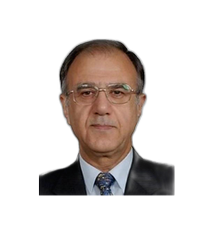
Japan
Senior Researcher for Global Optical Solutions and Kepler projects
He received doctorates from both Nagoya and Tohoku universities. As one of the leading experts in the field of developing and manufacturing electronic displays and sensors, he is the author of 105 patents and 28 technical documents in various countries, including Japan, USA, Canada, Europe, South Korea and Taiwan. 35 articles and presentations on screen technologies were published in international scientific journals, and 59 in local publications. He has published 5 books in Japanese, abstracts in English, 15 book chapters and 7 IEC standard documents, as well as participated in 9 government projects. He implemented these projects in cooperation with leading Japanese universities. In addition, he provided scientific guidance to researchers who received doctorate degrees in a number of foreign universities.
He was awarded the "Progress" medal in 2026 by the Decree of the President of the Republic of Azerbaijan Mr. Ilham Aliyev for his services in the field of strengthening friendship between peoples and the development of the Azerbaijani diaspora.